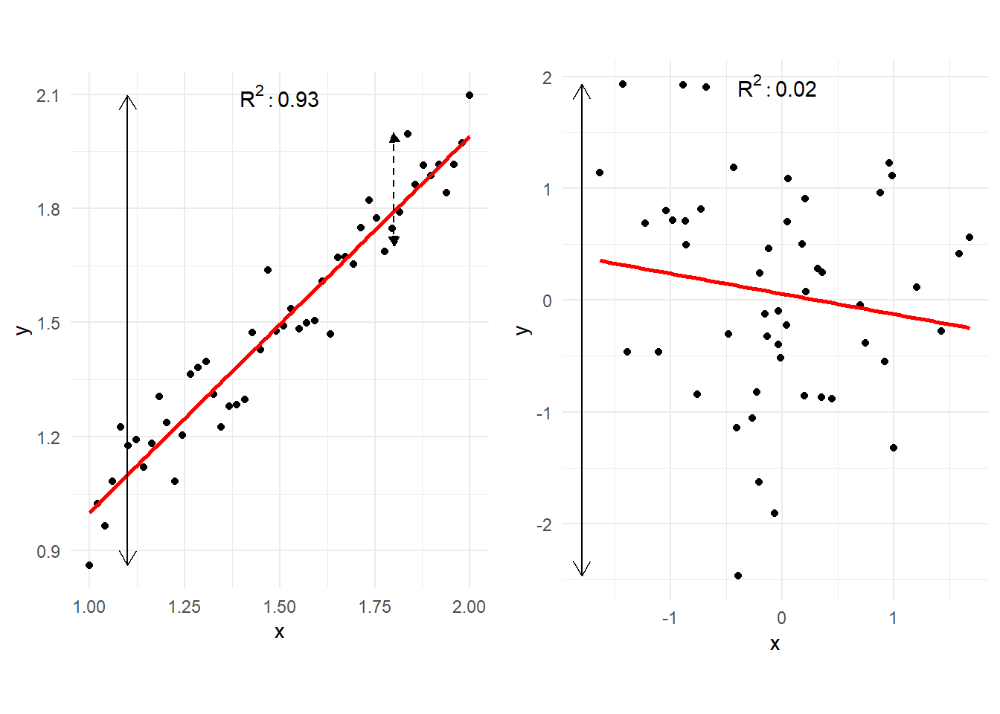
1 Modelos lineales
(“2026-09-02”)
En este tema se estudian los denominados modelos lineales. Matemáticamente un modelo es una relación matemática, algebraica o de otro tipo, que permite entender un fenómeno (o experimento) de interés. Aquí consideramos relaciones lineales, en un sentido amplio del término, como se verá. Es imposible describir la realidad de forma exacta mediante un modelo, sea lineal o de otro tipo, pero puede ser útil utilizar un modelo aproximado, basado en los datos, que permita entenderla y explicarla. Parafraseando a G.E.P. Box “…todos los modelos son falsos, pero algunos son útiles…”. En Estadística, a la parte estructural o determinista (expresada en forma algebraica) del modelo matemático se le añade un término de error, para incluir lo que dicha parte estructural no es capaz de explicar. Este término de error se desea aleatorio (estocástico), y tiene el papel de “cajón de sastre”.
El caso paradigmático de modelo lineal es el modelo de regresión simple, caso particular del modelo de regresión múltiple. El término regresión se utiliza para los distintos métodos estadísticos que intentan modelizar la relación entre una variable respuesta y una o varias variables explicativas.
Nota histórica: el término regresión tiene su origen en los trabajos de Francis Galton sobre la herencia de características cuantitativas (a partir de experimentos con semillas y, posteriormente, de estudios sobre la estatura de padres e hijos). Galton observó que los descendientes de individuos con valores extremos tendían a presentar valores menos extremos y más próximos a la media de la población. Denominó a este fenómeno regresión hacia la mediocridad, actualmente conocido como regresión hacia la media.
Otro tipo de modelos lineales son los modelos de diseño de experimentos (que se estudian en el Capítulo 2). En todos estos modelos, la variable respuesta debe ser cuantitativa/numérica continua. En el Capítulo 3 se estudiarán los modelos lineales generalizados que relajarán esta imposición sobre la variable respuesta.
Nota: generalmente los modelos de regresión que se estudian en este capítulo se basan en estudios observacionales (recogen por observación las variables de interés intentando no influir sobre las respuestas, por ejemplo, datos de variables atmosféricas o datos de distritos censales, como los conjuntos de datos
airqualityyBostonque manejaremos en los casos prácticos). Sin embargo, en un estudio experimental se someten de forma deliberada los individuos a algún tratamiento (combinación de valores de variables) con el objetivo de observar sus respuestas. De la combinación del enfoque experimental con los modelos de regresión se encarga el diseño óptimo de experimentos (mi línea principal de investigación).
Un par de buenas referencias bibliográficas para este tema son: Peña (2002), concretamente la segunda parte, capítulos 5 a 10, y Faraway (2004), que conjuga contenido matemático y práctico en los capítulos 1 a 7. Otra referencia, con un enfoque más aplicado, es el capítulo 15 “Modelización lineal” de Casero-Alonso y Durbán (2024), https://cdr-book.github.io/cap-lm.html del libro “Fundamentos de Ciencia de Datos con R”, Fernández-Avilés y Montero (2024), que denominamos en el texto como CDR.
1.1 Modelo estadístico de regresión
El modelo lineal de regresión simple permite modelizar el comportamiento de una variable aleatoria cuantitativa, denominada respuesta o dependiente, denotada por \(\mathbf{Y}\), mediante una función lineal de otra variable cuantitativa, denominada explicativa, regresora o predictora, \(\mathbf{X}_1\), que se supone está relacionada con ella (su grado de asociación con la respuesta puede evaluarse posteriormente). La forma habitual de expresar el modelo es: \[ y_i = \beta_0 + \beta_1 x_{i1} + \epsilon_i, \qquad \epsilon_i \sim N(0, \sigma^2), \ i=1, \ldots, n\] donde \(\mathbf{Y} = (y_1, y_2, \ldots, y_n)^\top\) es el vector de las \(n\) observaciones recogidas de la variable respuesta, \(\mathbf{X}_1 = (x_{11}, x_{21}, \ldots, x_{n1})^\top\) es el vector de las correspondientes \(n\) observaciones de la variable explicativa, \(\beta_0 \ \text{y} \ \beta_1\) son los coeficientes o parámetros del modelo (desconocidos, se estimarán a partir de los datos), y \(\epsilon=(\epsilon_1, \epsilon_2, \ldots, \epsilon_n)^\top\) es el vector de errores aleatorios independientes que convierte el modelo determinista (\(\beta_0 + \beta_1 x_{i1}\)) en modelo estocástico.
Equivalentemente: \[ y_i \mid x_{i1} \sim N(\beta_0 + \beta_1 x_{i1}, \sigma^2), \qquad i=1, \ldots, n\] donde queda más claro que se está modelizando la distribución condicional de \(\mathbf{Y},\) no simplemente la distribución marginal de \(\mathbf{Y}\).
Los supuestos más habituales sobre el error son: seguir una distribución normal, con esperanza cero, varianza constante y ser independientes.
La generalización a varias variables explicativas es inmediata: \[ y_i = \beta_0 + \beta_1 x_{i1} + \ldots + \beta_k x_{ik} + \epsilon_i, \qquad \epsilon_i \sim N(0, \sigma^2), \ i=1, \ldots, n.\] A este modelo se le denomina modelo lineal de regresión múltiple, donde el término lineal se refiere en los parámetros.
Nota: en este contexto, al hablar de lineal hay que distinguir entre lineal en las variables y lineal en los parámetros. Así:
- \(y_i=\beta_1 x_{i1} + \beta_2 x_{i2} + \epsilon\) es un modelo lineal en las variables y en los parámetros.
- \(y_i=\beta_1 x_{i1} + \beta_2 x_{i1}^2 + \epsilon\) es un modelo lineal en los parámetros, pero no en la variable \(\mathbf{X}_1\).
- \(y_i = \beta_1x_{i1}^{\beta_2} + \epsilon\) es un modelo no lineal tanto en los parámetros como en la variable.
Utilizando notación matricial: \[\mathbf{Y} = \mathbf{X} \beta + \epsilon, \qquad \epsilon \sim N_n(0, \sigma^2I) ;\]
\[\begin{bmatrix} y_1 \\ y_2 \\ \vdots \\ y_n \end{bmatrix} = \begin{bmatrix} 1 & x_{11} & x_{12} & \cdots & x_{1k} \\ 1 & x_{21} & x_{22} & \cdots & x_{2k} \\ \vdots & \vdots & \vdots & \ddots & \vdots \\ 1 & x_{n1} & x_{n2} & \cdots & x_{nk} \end{bmatrix} \begin{bmatrix} \beta_0 \\ \beta_1 \\ \vdots \\ \beta_k \end{bmatrix} + \begin{bmatrix} \epsilon_1 \\ \epsilon_2 \\ \vdots \\ \epsilon_n \\ \end{bmatrix},\] donde \(\mathbf{Y}\) vuelve a ser el vector de \(n\) respuestas, \(\mathbf{X}\) es la matriz \(n\times(k+1)\) de variables explicativas, matriz de diseño, que contiene una columna de unos para incluir en el modelo el parámetro \(\beta_0\) que no depende de las variables explicativas, \(\beta\) es el vector de \(k+1\) parámetros del modelo y \(\epsilon\) vuelve a ser el vector de los términos de error aleatorios, con distribución normal, esperanza cero y varianza constante, siendo \(I\) la matriz identidad.
Los modelos que se puedan expresar en la forma matricial anterior son modelos lineales.
Preguntas
En el modelo de regresión ¿tienen que ser todas las variables cuantitativas?
Respuesta corta: No.
Dependiendo del tipo de variables (\(\mathbf{X}_i\) e \(\mathbf{Y}\)) se tienen distintos modelos…
¿Y si hay más de una variable \(\mathbf{Y}\)? Se habla de regresión múltiple multivariante, que se podrá ver en otra asignatura del grado.
1.1.1 Objetivos de la regresión
Describir la estructura general entre la(s) variable(s) explicativa(s) y la respuesta, estimando y evaluando su efecto.
Generalmente, este proceso es iterativo, hasta seleccionar la o las variables del mejor modelo posible (como se ve en el Capítulo 5). En ocasiones, alguna variable explicativa se mantiene en el modelo por razones de diseño.Predecir observaciones futuras.
¡Ambos objetivos pueden ser muy distintos! Bajo el prisma del “machine learning” suele relajarse la descripción estructural y evaluación de los efectos, dando toda la importancia a la búsqueda del modelo con las “mejores” predicciones posibles.
1.1.2 Supuestos del modelo de regresión
Los supuestos clásicos del modelo lineal de regresión pueden formularse sobre los errores del modelo (mencionados anteriormente):
- Esperanza nula: \(\operatorname{E}(\epsilon)=0_n\),
- Varianza constante: \(\operatorname{Var}(\epsilon)=\sigma^2I_n\),
- Distribución normal \(\epsilon \sim N_n(0, \sigma^2 I)\),
- Incorrelación entre errores: \(\operatorname{E}(\epsilon_i\epsilon_j)=0, \ i\neq j\).
Nota: bajo normalidad, el supuesto de incorrelación es equivalente a independencia de los errores (que es un supuesto más fuerte).
En términos de la respuesta, esto equivale a considerar:
- Linealidad: la relación entre la(s) variable(s) explicativa(s) y la respuesta es lineal.
- Homocedasticidad (homogeneidad de varianzas): la varianza de la variable \(\mathbf{Y}\) para cada combinación de valores de las variables \(\mathbf{X}_i\) (distribución condicionada) es homogénea.
- Normalidad: la distribución condicional de \(\mathbf{Y}\) para cada combinación de valores de las \(\mathbf{X}_i\) se asume que sigue una distribución normal.
- Independencia: cada observación de la variable \(\mathbf{Y}\) debe ser independiente de las demás.
Se puede encontrar más información sobre las también denominadas hipótesis básicas en Peña (2002) (apartados 5.2.1 y 5.2.2) y en Faraway (2004) (Capítulo 4).
Residuos
Los residuos, \(u_i = y_i - \hat{y}_i\), son las discrepancias observadas entre las respuestas \(y_i\) (datos) y los valores estimados por el modelo o predicción del modelo \(\hat{y}_i\) (que obtendremos más adelante).
Pueden interpretarse como aproximaciones empíricas (con los datos que se tienen) al vector de errores aleatorios teórico \(\epsilon\) (no coinciden con ellos, al depender de los parámetros estimados). Recogen toda la información que la estructura del modelo no ha sido capaz de asimilar. Es muy importante el estudio de los residuos para comprobar las hipótesis y supuestos anteriores y dar con ello validez al uso del modelo, como se ve a nivel teórico en la sección Diagnosis (Sección 1.2.6) y en los casos prácticos (Sección 1.4 y Sección 1.5).
1.2 Modelo lineal de regresión simple
Es habitual comenzar el estudio de los modelos lineales con el caso más sencillo, el de regresión simple, para profundizar en los detalles de cada uno de los pasos del proceso de modelización, estimación, validación, interpretación y predicción. Posteriormente se señalarán los aspectos que cambian al pasar a la regresión múltiple, que es el caso más habitual en la práctica.
Partiendo de los datos muestrales recogidos sobre el fenómeno de interés. ¿Cómo obtener el modelo de regresión simple?
Estructura: se deben identificar la variable respuesta, \(\mathbf{Y}\) (la que se pretende explicar) y la variable explicativa \(\mathbf{X}\).
Nota: en este caso de una sola variable explicativa se prescindirá del subíndice “1” de aquí en adelante. Esto lleva aparejado que \(\mathbf{X}\) será un vector, en lugar de una matriz como se ha definido anteriormente.
Esta identificación define una forma estructural, que en este caso sencillo podría tener 2 formas:
- \(\operatorname{E}(y_i)=\beta_0 + \beta_1 x_i\), la habitual (incluso puede decirse “por defecto”) o
- \(\operatorname{E}(y_i)= \beta_1 x_i\) (proporcionalidad directa, sin término independiente).
Estimación: con los datos recogidos \((x_i, y_i)\) se obtienen las estimaciones \(\hat{\beta}_k\) de los dos parámetros \(\beta_k\) del modelo preestablecido.
Validación: mediante el análisis de residuos se comprueban las hipótesis que validan el uso del modelo estimado.
Interpretación/Inferencia: validado el modelo se interpretan las estimaciones de los parámetros y su utilidad práctica. También, mediante algún indicador, se dará cuenta de la bondad del modelo para explicar la variable respuesta.
Nota: en este proceso, puede ser conveniente cambiar el modelo (en el caso de regresión simple, considerar otra variable explicativa, o aplicar alguna transformación) para intentar obtener un modelo que explique mejor la respuesta, con mayor bondad, por lo que se volvería al paso 1.
Predicción: se obtienen las predicciones necesarias u oportunas a partir del modelo considerado, teniendo cuidado con la extrapolación (y, en algunos casos, también con la interpolación).
1.2.1 Estimación de los parámetros del modelo
En el caso más habitual de regresión simple, \(\operatorname{E}(y_i) = \beta_0 + \beta_1 x_i,\) se estiman los dos parámetros del modelo: \(\beta_0\), la ordenada en el origen y \(\beta_1\), la pendiente de la recta. Intuitivamente, se buscan las estimaciones \(\hat{\beta}_0\) y \(\hat{\beta}_1\) que “expliquen” la relación lineal entre las dos variables, aquellas que generen las mejores predicciones posibles, denotadas por \(\hat y_i\): \[\hat y_i = \hat{\beta}_0 + \hat{\beta}_1 x_i.\]
1.2.2 Método de mínimos cuadrados
El método por excelencia para obtener tales estimaciones es el método de mínimos cuadrados (1805 Gauss y Legendre). Consiste en minimizar la suma de los cuadrados de los residuos, \(u_i = y_i - \hat{y}_i = y_i - \hat{\beta}_0 - \hat{\beta}_1 x_i\), diferencia entre los valores observados y la predicción. Es decir, \[\min_{\beta_0, \beta_1} \sum_i u_i^2 = \min_{\beta_0, \beta_1} \sum_i(y_i - \beta_0 - \beta_1 x_i)^2.\]
Por resultados básicos de optimización, el mínimo se obtendrá derivando respecto a cada uno de los parámetros, e igualando a cero. Se obtiene así un sistema lineal de 2 ecuaciones con 2 incógnitas, denominado ecuaciones normales: \[\left.\begin{align*} \dfrac{\partial \sum_i u_i^2}{\partial \beta_0} &= 0 \Rightarrow \sum_{i} u_i = 0 \\ \dfrac{\partial \sum_i u_i^2}{\partial \beta_1} &= 0 \Rightarrow \sum_{i} u_i x_i = 0 \end{align*} \right\rbrace\]
cuya solución son los estimadores de mínimos cuadrados (ordinarios):
\[\begin{align*} \hat{\beta}_1^{MC} &= r \frac{S_y}{S_x}, \\ \hat{\beta}_0^{MC} &= \bar{y} - \hat{\beta}_1^{MC} \bar{x}, \end{align*} \] donde \(S_y\) y \(S_x\) son las desviaciones típicas muestrales de las variables \(\mathbf{Y}\) y \(\mathbf{X}\), y \(r\) es el coeficiente muestral de correlación lineal de Pearson: \[r=\frac{S_{xy}}{S_x S_y}=\dfrac{\sum (x_i-\bar x)(y_i-\bar y )/(n-1)}{\sqrt{\dfrac{\sum (x_i-\bar x)^2}{n-1} \dfrac{\sum (y_i-\bar y)^2}{n-1}}}.\]
Correlación
En la regresión simple se espera que ambas variables estén correlacionadas, así, el modelo tendrá sentido práctico (aunque “correlación no implica causalidad”). El coeficiente poblacional de correlación lineal de Pearson, \(\rho\), mide la fuerza de la relación lineal entre dos variables. Su estimador, \(\hat \rho = r\), puede expresarse en función de las medias y las desviaciones típicas muestrales de las variables (z-scores muestrales):
\[r=\frac{1}{n-1}\sum \left( \frac{x_i-\bar{x}}{S_x} \right) \left(\frac{y_i-\bar{y}}{S_y} \right)=\frac{1}{n-1}\sum z_x z_y.\]
Los valores de este coeficiente se extienden de \(-1\) a \(1\), indicando ausencia de correlación lineal cuanto más cercano sea a \(0\).
Nota: hay que destacar el ejemplo ilustrativo del cuarteto de Anscombe, en el que 4 conjuntos de datos presentan el mismo valor del coeficiente de correlación lineal, pero su interpretación es muy distinta en cada uno de los 4 casos.
1.2.2.1 Interpretación geométrica
Los estimadores de mínimos cuadrados (MC) tienen una interpretación geométrica sencilla y gráficamente elocuente. Son aquellos que hacen que la recta de regresión simple minimice las distancias verticales (residuos) de toda la nube de puntos:
Ahora bien, también se puede representar el problema de MC en el espacio de las \(n\) observaciones (en lugar del espacio de 2 variables), lo que proporciona una interpretación geométrica interesante (véase Faraway (2004) apartado 2.3). La proyección ortogonal del vector \(\mathbf{Y}=(y_1, y_2, \ldots, y_n)^\top\) sobre el plano definido por los vectores \(\mathbf{1}\) y \(\mathbf{X}\) genera el vector de residuos \(\mathbf{u}\) perpendicular a ellos y a todos los vectores del plano. Además, aplicar el teorema de Pitágoras al triángulo rectángulo resultante de la proyección (Figuras 5.11 de Peña (2002) y 2.1 de Faraway (2004)) proporciona una forma alternativa de obtener la fórmula de la suma de cuadrados que se ve en la Sección 1.2.5.1.
1.2.3 Método de máxima verosimilitud
También se pueden estimar los parámetros del modelo mediante el método de máxima verosimilitud (MV), que consiste en maximizar la función de verosimilitud, o, equivalentemente, su logaritmo: \(\log L(\beta_0, \beta_1, \sigma)\). Suponiendo normalidad: \[\log L(\beta_0, \beta_1, \sigma) = -\dfrac{n}{2}\log (2\pi) - n \log(\sigma) -\frac{\sum_{i=1}^{n} u_i^2}{2\sigma^2}\] En Peña (2002), apartado 5.4.1, se puede ver el detalle de la obtención de los estimadores MV.
Bajo el supuesto de normalidad, los estimadores MC coinciden con los MV, es decir, los estimadores que minimizan la suma de cuadrados de los residuos, también maximizan la probabilidad de los datos observados. Basta observar la fórmula de la verosimilitud escrita arriba.
1.2.3.1 Estimación de la varianza del modelo
También es necesario estimar \(\sigma^2\), la varianza del modelo. Utilizando el método de máxima verosimilitud se llega a: \[\hat{\sigma}^2_{MV}=\dfrac{\sum u_i^2 }{n},\] es decir, es la varianza de los residuos (la dividida por \(n\), no por \(n-1\) que sería la varianza muestral).
Ahora bien, los \(n\) residuos no son independientes, se pierden 2 grados de libertad al tener que estimar los dos parámetros de la recta de regresión. Por ello, se define el estimador denominado varianza residual: \[\hat S_R^2=\dfrac{\sum u_i^2 }{n-2}.\] En la práctica se suele obtener su raíz cuadrada, \(\hat S_R\), denominada error estándar residual, que es una estimación de \(\sigma\). Puede interpretarse como la magnitud típica de las discrepancias entre \(y_i\) y \(\hat y_i\). Se expresa en las mismas unidades que la variable respuesta, lo que facilita su interpretación práctica: cuanto menor sea, más concentradas estarán, en general, las observaciones alrededor de la recta o superficie ajustada. No obstante, debe valorarse en relación con la escala de la respuesta y complementarse con la diagnosis de los residuos.
1.2.4 Propiedades de los estimadores
El estudio de las propiedades de los estimadores obtenidos resulta de interés para la posterior inferencia. Aquí se mencionan algunas propiedades. El lector interesado puede ampliar información, por ejemplo, en Peña (2002) (la Tabla 5.3, página 264, contiene un buen resumen).
Antes de ello, la ecuación de la recta de regresión también se suele expresar en la forma punto-pendiente: \[(y - \bar{y}) = \hat{\beta}_1 (x - \bar{x}), \] de donde se deduce que el punto \((\bar x, \bar y)\), pertenece a la recta de regresión estimada. Tal punto se conoce como centroide, centro de gravedad de la nube de puntos.
1.2.4.1 Propiedades de \(\hat \beta_1\)
\(\hat \beta_1\) es la pendiente estimada de la recta. Puede obtenerse como:
- una media ponderada de pendientes de las rectas que pasan por cada punto y por el centroide. Tal ponderación está relacionada con el leverage (véase Sección 1.2.9 -Observaciones influyentes-) e implica que los puntos con valores de \(\mathbf{X}\) más alejados a la media tienen más influencia sobre la estimación de \(\beta_1\), más cuanto menos puntos sean.
- una combinación lineal de valores de la variable respuesta, por lo que el estimador sigue una distribución normal (condicional a \(\mathbf{X}\)), bajo el supuesto de normalidad de la variable respuesta, concretamente, \[\hat \beta_1 \sim N \left( \beta_1, \dfrac{\sigma^2}{(n-1)S_x^2} \right).\]
Por lo tanto, es insesgado (asumiendo la linealidad, independientemente de la normalidad) y su varianza disminuirá (aumentará la precisión de \(\hat\beta_1\)), bien al aumentar el tamaño de muestra, \(n\), o al aumentar la dispersión de los valores de \(\mathbf{X}\), \(S_x^2\). Como \(\sigma^2\) es desconocida, se considerará en su lugar la varianza residual \(\hat S_R^2\).
1.2.4.2 Propiedades de \(\hat \beta_0\)
\(\hat \beta_0\) es el parámetro de la ordenada en el origen (intersección de la recta con el eje \(y\)) y su importancia se encuentra en un segundo plano respecto a \(\hat \beta_1\).
También se puede ver como una combinación lineal de valores de la variable respuesta, por lo que seguirá una distribución normal (como la variable respuesta), concretamente, \[\hat \beta_0 \sim N \left( \beta_0, \sigma^2 \left( \dfrac{1}{n}+ \dfrac{\bar x^2}{(n-1) S_x^2}\right) \right).\] De nuevo, este estimador es insesgado. Su varianza está multiplicada por \(\bar x^2\), lo que supone mayor impacto cuanto mayor sea el valor de \(\bar x\).
Además, ambos estimadores están correlacionados: \[\operatorname{Cov}(\hat{\beta}_0, \hat{\beta}_1) = -\dfrac{\bar{x}\sigma^2}{(n-1)S_x^2}\] Por lo tanto, cuando \(\bar{x}>0\), \(\hat{\beta}_0\) y \(\hat{\beta}_1\) están negativamente correlacionados.
1.2.4.3 Propiedades de \(\hat \sigma^2\)
Respecto a la varianza residual, se tiene que \(\hat S_R^2\) es un estimador insesgado de \(\sigma^2\), dado que \[\dfrac{(n-2) \hat S_R^2}{\sigma^2} \sim \chi^2_{n-2}.\]
1.2.5 Contrastes de hipótesis. Sumas de cuadrados.
Conocidas las distribuciones en el muestreo de los estimadores, podemos plantear contrastes de hipótesis sobre ellos. En una regresión simple, realizar un contraste de hipótesis sobre el parámetro \(\beta_1\) asociado a la variable explicativa, es equivalente al contraste de hipótesis sobre el coeficiente poblacional de correlación lineal de Pearson entre dicha variable y la respuesta, \(\rho\): \[\left. \begin{array}{ll} H_0: \beta_1 = 0 \\ H_1: \beta_1 \neq 0 \end{array} \right\rbrace \qquad \equiv \qquad \left. \begin{array}{ll} H_0: \rho = 0 \\ H_1: \rho \neq 0 \end{array} \right\rbrace\]
Para parejas de variables que sigan una normal bivariante y estén incorreladas \((\rho=0)\) se cumple que: \[\dfrac{r \sqrt{n-2}}{\sqrt{1-r^2}} \sim t_{n-2} \qquad \equiv \qquad \dfrac{\hat \beta_1}{\hat s(\hat \beta_1)} \sim t_{n-2}\] donde \(\hat s(\hat \beta_1)\), es el estimador de la desviación típica del estimador. Esto también se cumple de forma aproximada si las variables son no normales y si los tamaños de muestra son “grandes” (o no demasiado pequeños). Y de aquí podemos determinar la significación de la estimación del parámetro \(\hat \beta_1\) (de una correlación). El p-valor nos dará la fuerza de dicha significación, pues cuantifica la evidencia contra la hipótesis nula bajo el modelo/hipótesis correspondientes. Pero ojo, no mide ni la magnitud del efecto ni la importancia práctica. ¡Cuidado con interpretar significativo como importante para el problema!
1.2.5.1 Suma de Cuadrados en la regresión
Al contraste de hipótesis anterior también puede llegarse desde otro punto de vista. Los residuos, distancias verticales entre cada uno de los puntos, \((x_i,y_i)\), y la recta de regresión, son aproximaciones empíricas del error aleatorio del modelo. ¿Hasta qué punto es más importante el efecto de la variable \(\mathbf{X}\) sobre la variable \(\mathbf{Y}\) que el error de los residuos?
Si las variables \(\mathbf{X}\) e \(\mathbf{Y}\) no estuviesen relacionadas, conocer los valores de \(\mathbf{X}\) no aportaría información sobre \(\mathbf{Y}\). La mejor predicción de \(\mathbf{Y}\) que podríamos hacer sería con su media, \(\bar{\mathbf{Y}}\), sin tener en cuenta el valor de \(\mathbf{X}\). Este modelo (\(\beta_1 = 0\)), el más sencillo, es el que vamos a intentar falsar.
El estudio de la variabilidad de \(\mathbf{Y}\) nos aportará evidencias (o no) que nos permitan rechazar \(H_0: \beta_1 = 0\) (falsarla) y asumir la hipótesis alternativa, \(H_1 : \beta_1 \neq 0\). Si no hay evidencias suficientes se asumirá \(H_0\), lo que no implica que quede demostrada.
Definimos la variabilidad como la suma de cuadrados de un dato con respecto a un valor de referencia, siendo una medida de la información que contiene la variable (si no hay variabilidad no hay información). Concretamente definimos la Variabilidad Total, VT: \[VT = SC_{total}=SC_y=\sum_{i=1}^n (y_i-\bar{y})^2\]
donde \(SC_{total}\) es el numerador de la habitual varianza muestral aplicada a la variable respuesta, \(\mathbf{Y}\). Se puede calcular multiplicando dicha varianza por sus grados de libertad \(n-1\).
Matemáticamente tal suma de cuadrados puede descomponerse en otras dos sumas de cuadrados:
\[SC_{total}=SC_{regresion}+SC_{residual}\] \[\sum (y_i-\bar{y})^2={\sum (\hat{y}_i-\bar{y})^2}+\sum (y_i-\hat{y}_i)^2\] A dichas sumas de cuadrados, siguiendo con la nomenclatura de variabilidad las denominamos: Variabilidad Explicada por la regresión, \(VE = SC_{regresion}\), y Variabilidad No Explicada por la regresión, \(VNE = SC_{residual}\): \[ VT = VE + VNE\]
Estudiamos los grados de libertad (gl) al calcular cada uno de los términos:
- Para \(SC_{total}\) “gastamos” \(1\) gl al dar la media, \(\bar{y}\), por lo que tiene \(n-1\) gl.
- Los gl de los residuos son \(n-2\), necesitamos \(\hat{\beta}_0\) y \(\hat{\beta}_1\) para calcular \(SC_{residual}\).
- Con lo que nos queda \(1\) gl para la suma de cuadrados de la regresión \(SC_{regresion}\). “Gastamos” \(1\) gl con el parámetro extra que hemos estimado \(\hat{\beta}_1\), la pendiente.
Si se promedia cada suma de cuadrados por sus respectivos grados de libertad (SCM: Suma de Cuadrados Media), se están calculando “varianzas”.
Nota: la suma de cuadrados media residual sí es un estimador de \(\sigma^2\); la de la regresión no es simplemente “la varianza de la regresión”.
Nunca seremos capaces de realizar predicciones perfectas (“…todos los modelos son falsos…” -G.E.P. Box-), pero estamos interesados en comparar el efecto de \(\mathbf{X}\) sobre \(\mathbf{Y}\) con el error aleatorio (residual):
\[\frac{\text{Efecto de X sobre Y}}{\text{Error Aleatorio}}=\frac{\text{``Varianza" de la Regresión}}{\text{``Varianza" del Error}}=\frac{SCM_{regresion}}{SCM_{residual}}=F \sim F_{1,n-2}\]
Esto se conoce en estadística como un Análisis de la Varianza, ANOVA (que se ve más en profundidad en el Capítulo 2).
Nota: el ANOVA tiene distintas aplicaciones con este mismo enfoque de comparar “varianzas”, en este caso dentro de un modelo. Más adelante, en la Sección 1.5.4, se utiliza para comparar dos modelos, mediante la “ganancia relativa” de varianza entre ellos.
Para que podamos falsar \(H_0\), la \(SCM_{regresion}\) debe ser mayor que la \(SCM_{residual}\), cuanto más grande mejor. Si ambas son próximas se concluye que \(\beta_1\) puede ser 0. Se compara entonces el estadístico F obtenido de dividir las dos “varianzas”, con una distribución F con los grados de libertad correspondientes, \(1\) en el numerador y \(n-2\) en el denominador. Calculando el p-valor se podrá rechazar (o no) la hipótesis nula, concluyendo (o no) que \(\beta_1\) es significativamente distinto de 0.
Nota: es importante resaltar aquí el supuesto de linealidad. No rechazar \(H_0\) no implica necesariamente que \(\mathbf{X}\) e \(\mathbf{Y}\) sean independientes, podrían estar relacionadas de forma no lineal, y la aproximación lineal podría no ser significativa.
En el apartado 5.6.2 de Peña (2002), se descompone la desviación de los datos (usando notación matricial) en dos componentes ortogonales. Por el teorema de Pitágoras se llega a la descomposición de la variabilidad descrita aquí; mencionada en la interpretación geométrica de los estimadores de mínimos cuadrados (Sección 1.2.2.1). Además, en el Apéndice 5B, se dan detalles sobre la “Deducción de las distribuciones de sumas de cuadrados”.
1.2.5.2 Bondad de ajuste: Coeficiente de Determinación, \(R^2\)
Por la descomposición anterior, \(VT = VE + VNE\), la proporción de variabilidad explicada por la regresión, \(VE\), respecto a la total, \(VT\), es un indicador de la bondad de la regresión que se conoce como coeficiente de determinación, \(R^2\): \[R^2 = \frac{VE}{VT}=1-\frac{VNE}{VT}.\]
Como proporción, puede tomar valores entre \(0\) y \(1\), evitando así la dependencia de las unidades de medida. Suele expresarse en porcentaje.
La siguiente figura permite ilustrar el concepto de bondad de ajuste.
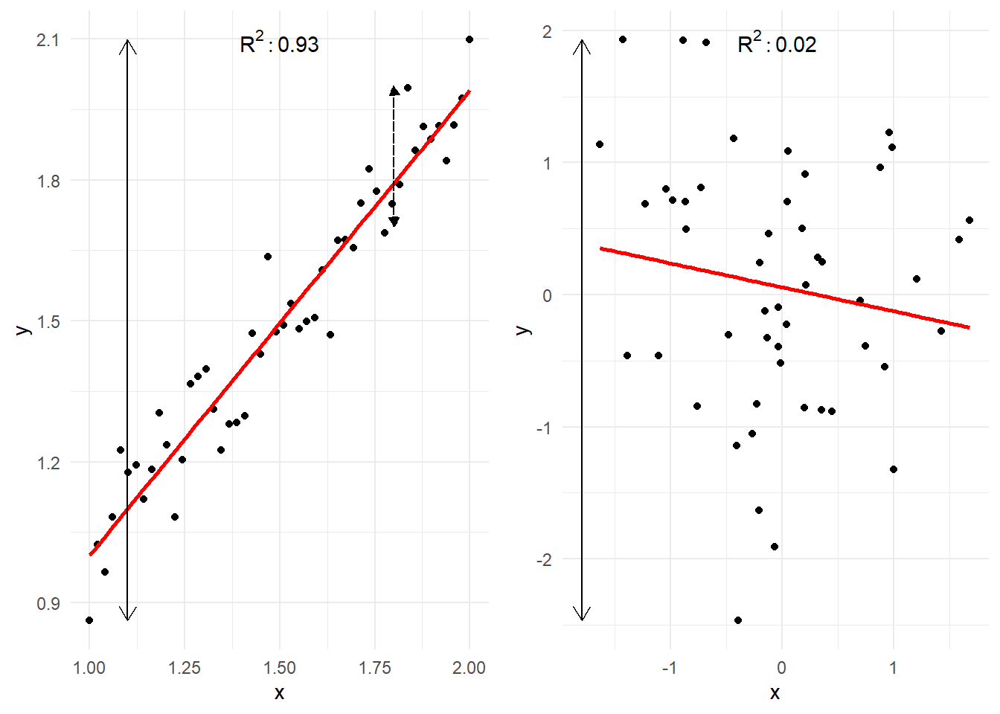
En la gráfica de la izquierda se tiene un buen ajuste de la recta de regresión, que produce un \(R^2\) elevado. Mientras que en la gráfica de la derecha el \(R^2\) es próximo a cero, indicando que el conocimiento de los valores de \(\mathbf{X}\) aporta casi nula información sobre los valores de la variable \(\mathbf{Y}\). Para mayor énfasis, en la imagen de la izquierda se muestra la variabilidad total de \(\mathbf{Y}\) frente a la variabilidad que tiene \(\mathbf{Y}\) para casi cualquier valor de \(\mathbf{X}\).
Obtención del coeficiente
En el caso de la regresión simple, \(R^2\) coincide con el cuadrado del coeficiente de correlación, \(r\) (véase Peña (2002), apartado 5.7.1, donde se dan detalles de cómo llegar al coeficiente de correlación a partir del de determinación, o a partir de la varianza residual).
1.2.6 Diagnosis
La diagnosis consiste en comprobar los supuestos básicos del modelo (Sección 1.1.2). Recordemos: linealidad, homocedasticidad, normalidad e independencia.
En la regresión simple, los supuestos de linealidad y homocedasticidad se pueden comprobar visualmente acudiendo al diagrama de dispersión (como los de la figura anterior). En la regresión múltiple, no es tan directo, por lo que se acude a los gráficos de diagnóstico, basados en los residuos del modelo. Con la ayuda de R será bastante sencillo obtener tales gráficos, por lo que, en la práctica, se comprueban las hipótesis (y alguna característica más) en ellos. Ahora bien, el supuesto de independencia podría incumplirse por construcción, por ejemplo, si se tienen datos temporales.
Un enfoque ligeramente distinto sobre la diagnosis se encuentra en Faraway (2004), que divide los problemas potenciales de la regresión estimada en 3 categorías:
- error: se asume que los errores son independientes, tienen varianza constante y se distribuyen siguiendo una normal.
- modelo: se asume que la parte estructural del modelo es correcta, es decir, que la relación entre las variables es lineal.
- observaciones inusuales: en ocasiones unas pocas observaciones no se ajustan al modelo, o cambian/influyen demasiado en el modelo.
Además indica que las técnicas gráficas de diagnóstico son más flexibles, pero mucho más difíciles de interpretar, que las de contrastes, que son sencillas y directas (no requieren de intuición y podrían parecer más precisas), pero no permiten una evaluación general del problema. La diagnosis gráfica de los residuos permite detectar problemas, revelar estructuras ocultas (que dan pistas para solucionar los problemas de la regresión) que es imposible vislumbrar con los contrastes, llevando la modelización a un proceso iterativo, con cierto aire artesanal. Por ello, predomina un enfoque gráfico para el diagnóstico, acudiendo a los contrastes como complemento para confirmar lo observado en los gráficos. En ocasiones los gráficos pueden ser ambiguos, pero al menos permiten verificar que no hay grandes desviaciones de los supuestos del modelo.
1.2.6.1 Linealidad
El modelo asume una estructura lineal en la relación entre la variable explicativa y la respuesta.
Como se ha comentado, puede observarse fácilmente con el gráfico de dispersión entre ambas variables. Ahora bien, en la práctica, se puede comprobar esta hipótesis en el gráfico de diagnóstico “residuos frente a valores estimados por el modelo”. Si en el gráfico se observan tendencias u otros patrones marcados se estará incumpliendo la linealidad (“le falta algo al modelo”), para asumir una relación lineal se debe observar aleatoriedad, valores dispersos (verticalmente) en torno a 0 (véanse los gráficos del apartado siguiente -Homocedasticidad-).
La tabla ANOVA permite contrastar la significación global del modelo lineal especificado, pero no garantiza por sí sola que la forma funcional elegida sea adecuada. Como complemento puede utilizarse el test RESET (Ramsey, 1969), que contrasta si la incorporación de términos no lineales construidos a partir de los valores estimados mejora significativamente el modelo. Un p-valor pequeño indica posibles problemas de especificación funcional, aunque no identifica cuál debería ser la forma alternativa.
Nota: en estos contrastes (y los venideros), no rechazar \(H_0\) no demuestra que el supuesto (linealidad, etc.) sea cierto. Se suele decir que no hay suficiente evidencia estadística para rechazar la hipótesis.
1.2.6.2 Homocedasticidad
Los residuos deben tener varianza constante: homocedasticidad, con respecto a los valores de la variable \(\mathbf{X}\), en el caso de regresión simple (por lo que se puede comprobar en el gráfico de dispersión entre \(\mathbf{X}\) e \(\mathbf{Y}\)). La falta de homocedasticidad implica pérdida de eficiencia de los estimadores MC/MV pues implica distinta precisión en las estimaciones, siendo inválidos los errores estándar clásicos.
El gráfico de diagnóstico apropiado para observar la homocedasticidad o heterocedasticidad es el de “residuos frente a valores estimados por el modelo” (el mismo que para la linealidad, que es también válido para el caso de regresión múltiple).
En el siguiente gráfico se pueden ver ejemplos simulados de distintas situaciones, que se interpretan de una forma relativamente clara. Pero “la realidad supera la ficción…”. Se necesita experiencia para interpretar gráficos de residuos de forma solvente.
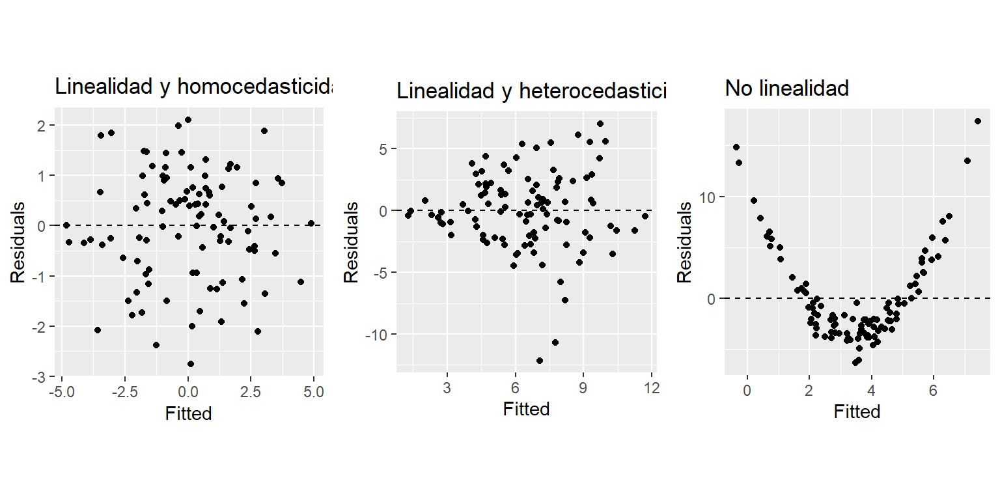
Lo deseable en este gráfico es encontrar una nube de puntos con similar dispersión (vertical) alrededor de 0 (para cada valor de “X” o “fitted”), como en el primer gráfico. Si se observa un patrón, como una forma cónica (segundo gráfico), hay indicios de heterocedasticidad (varianza no constante) en el modelo.
En el tercer gráfico se observa una clara tendencia no lineal, además de una ligera heterocedasticidad (mayor varianza en la zona central que en las colas, que, por otro lado, tienen pocos datos).
Estas dos últimas situaciones dan pistas de las posibles acciones a tomar, como veremos.
Como se ve en los casos prácticos (Sección 1.4 y Sección 1.5), se suele también comprobar la homocedasticidad en el gráfico de la raíz cuadrada del valor absoluto de los residuos estandarizados (véase Sección 1.2.9) frente a los valores estimados. Al tomar el valor absoluto se aumenta la resolución para detectar la falta de homocedasticidad. Ahora bien, no permite la comprobación de la no linealidad.
Una alternativa, más elaborada, es la propuesta de Faraway (2004): dibujar los residuos frente a cada una de las \(x_i\) -en caso de regresión múltiple-. Tanto las incluidas en el modelo, como las no incluidas, mirando en estas últimas si existe alguna relación que indique la necesidad de incluirla en el modelo.
Los contrastes para detectar heterocedasticidad tienen una hipótesis nula clara: \[H_0: \sigma^2 = \text{cte}, \] Pero dependen de la hipótesis alternativa especificada. Así, el contraste puede detectar bien un tipo específico de heterocedasticidad, pero no tener potencia suficiente para otros.
De entre los distintos contrastes para validar la homocedasticidad, el más utilizado en la práctica es el contraste de Breusch-Pagan. El estadístico del contraste sigue aproximadamente una distribución \(\chi^2\) con \(1\) grado de libertad bajo \(H_0\), en el caso de regresión simple. En el caso de regresión múltiple seguirá una \(\chi^2\) con \(k\) grados de libertad bajo \(H_0\), siendo \(k\) el número de variables explicativas. En cualquier caso, se rechazará la homocedasticidad si se obtienen p-valores pequeños, habitualmente inferiores a 0.05.
1.2.6.3 Normalidad
Los residuos interesa que sigan una distribución normal, para inferencias exactas (\(t\), \(F\), p-valores, ICs), sobre todo en muestras pequeñas. Pero en realidad, la normalidad no es necesaria para que los estimadores MC sean BLUE (veremos en la Sección 1.3.3 el teorema de Gauss‑Markov por el cual dichos estimadores son insesgados y de mínima varianza dentro de la clase de estimadores lineales).
El gráfico apropiado para evaluarlo es el denominado Q-Q plot (gráfico Cuantil-Cuantil): un diagrama de dispersión de los cuantiles de los residuos frente a los cuantiles esperados de la distribución normal (con la misma media y desviación típica de los residuos). La interpretación, como diagrama de dispersión, es bien sencilla, los residuos siguen una distribución normal cuanto más se alineen los puntos del diagrama sobre una línea recta “guía” (y más diagonal sea dicha “guía”). Se incumple la normalidad generalmente por las colas, con puntos que se alejan ostensiblemente de la recta “guía”. Por ejemplo, se pueden observar patrones curvos, en forma de S, indicando que los residuos tienen colas más ligeras o más pesadas que la distribución normal, o curvatura en forma de U indicando que siguen otra distribución, aunque su interpretación precisa requiere cierta cautela. La siguiente figura ilustra algunos posibles casos:
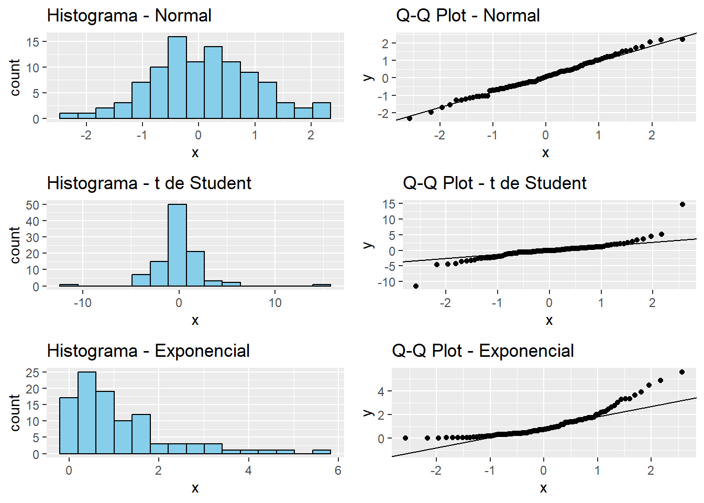
Para completar la comprobación gráfica, se acude a los contrastes de normalidad. El más difundido es el de Shapiro-Wilk, basado en la información del gráfico Q-Q, y considerado uno de los que más potencia poseen para contrastar normalidad. \[\left. \begin{array}{ll} H_0: \text{los residuos provienen de una distribución normal} \\ H_1: \hspace{1.4cm}\text{... no provienen...} \end{array} \right\rbrace\] Para más información sobre el test de Shapiro-Wilk se puede consultar también la web del NIST/SEMATECH e-Handbook of Statistical Methods: Shapiro-Wilk test. En este caso, el estadístico de contraste no sigue una distribución de probabilidad conocida y sus probabilidades se calcularon mediante simulaciones por el método de Monte Carlo.
1.2.6.4 Independencia
La independencia es un supuesto que puede comprobarse con los gráficos de residuos, pero que puede incumplirse desde el planteamiento del problema, de la recogida de datos, etc. sin necesidad de llegar al análisis de residuos, en el que incluso podría no quedar reflejado el incumplimiento.
Para comprobar la independencia temporal de los datos se visualizará el gráfico de residuos frente al orden en la toma de datos (si se dispone de ello). En “datos”(experimentos) no temporales, la aleatorización en la recogida de información (si es posible) es una garantía práctica de independencia, como se verá más en detalle en el Capítulo 2.
Como en los anteriores supuestos, se suele acudir a contrastes para completar el análisis de independencia. El más utilizado es el de Durbin-Watson, que comprueba la presencia de autocorrelación (relación temporal entre los residuos). \[\left. \begin{array}{ll} H_0: \text{los residuos no tienen correlación temporal} \\ H_1: \text{los residuos siguen un proceso autorregresivo de primer orden, } AR(1) \end{array} \right\rbrace\] Más información en Estadístico de Durbin–Watson.
1.2.6.5 Soluciones
Como se ha comentado, los gráficos de residuos, a la par que pueden conducir a rechazar uno o varios supuestos, pueden proporcionar pistas para su solución.
Lo primero que suele saltar a la vista en el análisis gráfico es la presencia de observaciones atípicas, que contribuyen a la falta de linealidad, de homocedasticidad, ambas… Lo apropiado es analizar el impacto de dichas observaciones, por ejemplo, comparando los modelos estimados con tales observaciones o sin ellas. Para ello, se han desarrollado medidas como el leverage y la distancia de Cook, para averiguar la influencia de las observaciones (sean atípicas o no) en la regresión (véase Sección 1.2.9 -Observaciones influyentes-). El resultado de este análisis puede llevar a detectar errores de medición, o que la definición funcional (como forma lineal) del problema no es la adecuada.
Otra posible solución para obtener linealidad y/o homocedasticidad es realizar transformaciones en las variables, bien \(\mathbf{Y}\), bien \(\mathbf{X}\), o ambas (véase Sección 1.2.10 -Transformaciones-). Por ejemplo, la relación entre la variable \(\mathbf{Y}\) y la \(\mathbf{X}\) podría ser exponencial, por lo que, tomando como respuesta \(\log(\mathbf{Y})\) se tendrá linealidad. Sobre la heterocedasticidad, en ocasiones se da por la dependencia de la varianza de \(\mathbf{Y}\) respecto de \(\mathbf{X}\). Si se dividen las observaciones por la estructura que provoque \(\mathbf{X}\) en la varianza, se tendrá un modelo homocedástico. En la práctica, el gráfico de residuos frente a valores estimados puede dar pistas sobre la transformación a realizar. Aunque suelen probarse varias transformaciones, pues es un arte encontrar la más adecuada (la intuición y la experiencia pueden ayudar).
Un caso más complejo de intuir es la introducción de variables para conseguir linealidad, por ejemplo, términos polinómicos de la misma variable, lo que conduce a una regresión polinómica lineal (véase Sección 1.5.3 -Extensiones/Transformaciones de la regresión múltiple-); o se pueden añadir otras variables, lo que lleva a un modelo lineal de regresión múltiple (Sección 1.3). Otras opciones para resolver los problemas por incumplimiento de los supuestos básicos pasan por acudir a regresión no paramétrica (que se escapa del alcance de este material) o, en el caso de la heterocedasticidad, aprovechar si se conoce la estructura de varianza para utilizar el método de mínimos cuadrados ponderados (asignando a cada observación un peso inversamente relacionado con su varianza). Este método es un caso particular de los mínimos cuadrados generalizados, que permiten considerar, además, posibles correlaciones entre los errores. También, en el caso de heterocedasticidad, se podría acudir al uso de errores estándar robustos que no cambian la recta estimada, pero cambian cómo se mide la incertidumbre.
A modo de receta, gracias a unos apuntes de María Durbán (se señalan con “!” términos no comentados en este material):
| Hipótesis | Violación | Detección | Soluciones |
|---|---|---|---|
| Linealidad | Relación verdadera no es lineal | Residuos frente a X con patrón | Polinomios, transformaciones, GAM(!) |
| Homocedasticidad | Varianza del error cambia con “X” | Residuos frente a ajustados (abanico), BP/White(!) | SE robustos, transformaciones, WLS |
| Normalidad | Errores con colas pesadas/asimetría | QQ-plot, Histograma, Shapiro–Wilk | Transformaciones, tratar outliers, GLM, Bootstrap (!) |
| Independencia | Errores autocorrelados | Residuos en el tiempo, Durbin–Watson, ACF (!) | Modelos dinámicos (!), modelizar ARMA (!), SE HAC (!) |
1.2.7 Interpretación de la recta de regresión
Una vez estimada y validada la recta de regresión, se puede pasar a interpretar los coeficientes/parámetros, si son significativos, estadísticamente hablando, y/o tienen un sentido práctico. Si no son significativos y no tienen interés o utilidad práctica, el modelo se puede simplificar eliminándolos.
La interpretación generalmente más importante es la de \(\hat \beta_1\) dado que recoge el efecto medio estimado sobre la variable \(\mathbf{Y}\) de la variación de una unidad de la variable explicativa \(\mathbf{X}\). Por ejemplo, si se tiene “gasto en calefacción” como variable respuesta y “temperatura exterior” como variable explicativa, la estimación de \(\hat \beta_1\), asociada a dicha variable explicativa podría ser, por ejemplo, -2.5, indicando que el aumento de 1 unidad en la temperatura exterior, en términos medios, reduce en 2.5 unidades el gasto en calefacción; equivalentemente, la reducción de 1 unidad en la temperatura, aumenta en 2.5 unidades el gasto.
Ahora bien, su magnitud e interpretación depende de las unidades en las que esté recogida la variable (no es lo mismo que la temperatura se haya medido en ºC que en K, ni que la longitud se mida en metros o en pies). Así, el impacto sobre la respuesta del cambio de \(1\) ºC (o de \(1\) m) será de una magnitud muy distinta al cambio de 100ºC (\(1\) pie). De hecho, el valor de \(\hat \beta_1\) se podría aumentar o disminuir haciendo cambios de escala en las variables \(\mathbf{Y}\) y \(\mathbf{X}\).
Además, esta interpretación debe hacerse dentro del rango de valores observado, evitando interpretaciones causales salvo que el diseño del estudio lo permita.
Nota: ¿Y qué pasa si en lugar de tener sólo una variable tenemos más variables?
En el caso práctico que se ve en la Sección 1.4.3, se ve el cambio en la interpretación de las estimaciones de los parámetros que supone el tener varias variables explicativas.
La interpretación de la estimación \(\hat \beta_0\) es el valor medio estimado en ausencia del valor de la \(\mathbf{X}\), que en ocasiones no pertenece al rango de variación de la variable \(\mathbf{X}\) o puede no tener sentido (por ejemplo, si \(\mathbf{X}\) recoge la edad de individuos, puede que no tenga sentido la media a \(0\) años).
Si la recta no fuese significativa, no implica que no haya relación entre \(\mathbf{X}\) e \(\mathbf{Y}\), quizá la relación es no lineal (como se ve en Sección 1.2.6) o quizá el rango escogido para la \(\mathbf{X}\) no es el idóneo para observar su relación con \(\mathbf{Y}\) (quizá es demasiado “estrecho”).
Nota: Peña (2002), señala que, para encontrar relaciones causales hay que acudir al diseño de experimentos (Capítulo 2), porque en un experimento se puede intentar controlar los valores de la variable \(\mathbf{X}\) que se cree que influyen sobre la \(\mathbf{Y}\) y aleatorizar el resto de variables para “repartir” su impacto sobre la respuesta.
Mientras que si los datos son observacionales, como se mencionó al principio del tema, se puede deducir covariación o asociación, pero no causalidad (sin supuestos adicionales). Por ejemplo, hay más criminalidad en las ciudades con más policías. La causa de dicha asociación es intuitivamente el tamaño de la ciudad ¡una tercera variable! (que aquí es confusora, pero podría ser mediadora). Así, reducir el número de policías ¡no causaría una reducción de la criminalidad!
1.2.8 Predicción
Uno de los objetivos de la modelización es la posibilidad de poder predecir valores de la variable respuesta conocidos los valores de la variable explicativa.
Nota: existen dos enfoques sobre este tema, por un lado, el que se desarrolla aquí, de predicción “simple” o dentro de muestra (como veremos en los casos prácticos). Por otro lado, el enfoque de evaluación predictiva del modelo, que se desarrolla en el Capítulo 5 y que involucra la división de los datos en conjuntos de entrenamiento del modelo y validación, y se acuden a métricas como la RMSE o el MAE para evaluar el rendimiento predictivo de los modelos estimados.
Dichas predicciones pueden ser de dos tipos, predicciones medias, para la media de un conjunto de observaciones, o predicciones individuales, para un sólo valor de la variable respuesta, proporcionando uno o varios valores de la variable explicativa. Realmente, la predicción será la misma, la dada por la recta de regresión, pero la incertidumbre o precisión de dicha estimación, esto es, el intervalo de confianza, será distinto según se trate de la predicción de una media o un valor individual. Los intervalos de confianza para las predicciones individuales son más amplios que para los intervalos de confianza de la recta (de la media). Para todo ello es fundamental estudiar el error estándar de la pendiente y de la ordenada en el origen (en el caso de regresión lineal).
1.2.8.1 Errores estándar de los estimadores
De las propiedades obtenidas anteriormente para los estimadores de los parámetros del modelo, se pueden deducir intervalos de confianza sobre tales estimadores. Concretamente, como \(\hat \beta_k\) sigue una distribución normal \[IC_{1-\alpha} (\hat \beta_k) = \hat \beta_k \pm t_{gl,1-\alpha/2} \cdot \hat s(\hat \beta_k)\] donde \(gl\) son los grados de libertad, \(\alpha\) es el nivel de significación escogido de antemano y \(\hat s(\hat \beta_k)\), es la estimación de la desviación típica del estimador, también conocido como error estándar del estimador, que depende de la varianza residual.
El error estándar de la pendiente es: \[\hat s (\hat \beta_1)=\sqrt{\dfrac{\hat S_R^2}{(n-1)S_x^2}}=\sqrt{\frac{SC_{residual}/(n-2)}{SC_x}}. \] Y para la ordenada en el origen: \[\hat s (\hat \beta_0)=\sqrt{\frac{SC_{residual}}{n-2} \left( \dfrac{1}{n} + \dfrac{ \bar x^2}{SC_x}\right)}\]
Ahora bien, es más interesante poder calcular el error estándar y, con ello los intervalos de confianza, para las predicciones medias: \[\hat s(\hat y) = \sqrt{\frac{SC_{residual}}{n-2} \left( \frac{1}{n}+\frac{(x_i-\bar{x})^2}{SC_x} \right)}\]
Nota: para una predicción individual \[\hat s(\hat y) = \sqrt{\frac{SC_{residual}}{n-2} \left( 1+\frac{1}{n}+\frac{(x_i-\bar{x})^2}{SC_x} \right)}\]
\[IC_{1-\alpha} (\hat y) = (\hat \beta_0 + \hat \beta_1\cdot x_i) \pm t_{n-2, 1-\alpha/2} \cdot \hat s (\hat{y})\]
Con R será fácil obtener estos intervalos de confianza para los dos tipos de predicción: para la respuesta media y para una nueva observación individual. Algunos paquetes muestran en los gráficos una banda de confianza, habitualmente del 95%, alrededor de la recta estimada. Esta banda representa, para cada valor \(x_i\), la incertidumbre con la que se estima la respuesta media. No debe confundirse con el intervalo de predicción para una nueva observación individual, que es más amplio porque incorpora tanto la incertidumbre en la estimación de la recta como la variabilidad aleatoria de las observaciones.
1.2.9 Observaciones influyentes
Se sabe que, cuanto más alejado de su media esté el valor \(x_i\) observado más influencia tendrá sobre la pendiente de la recta de regresión. Sobre todo si no concuerda su pendiente respecto a la media, con la pendiente marcada por el resto de valores, y más si es un valor atípico.
Leverage
El leverage (efecto palanca) es una medida necesaria para medir dicha influencia. En el caso de regresión simple se puede calcular como: \[h_i = \dfrac{1}{n} + \dfrac{(x_i - \bar x)^2 }{\sum_{j=1}^n(x_j - \bar x)^2 } \] Observando la fórmula se deduce que el leverage toma valores entre \(1/n\) (cuando \(x_i=\bar x\)) y \(1\) (cuando \(x_i\) esté muy alejado de \(\bar x\) -véase Peña (2002) para detalles sobre esta acotación superior-). A mayor leverage mayor impacto potencial sobre la pendiente de la recta de regresión.
Residuos estandarizados
Una observación con un valor de leverage próximo a \(1\) puede hacer que la recta de regresión pase por tal observación (además de pasar por el centroide, \((\bar x, \bar y)\)). Este hecho implica que en las observaciones con alto leverage, el residuo y su varianza son pequeños, mientras que en las observaciones cercanas a la media, el leverage es bajo y puede que su residuo y varianza sean más grandes. Por ello se suelen definir los residuos estandarizados: \[r_i = \dfrac{u_i}{\hat S_R \sqrt{1-h_i}}\] que, bajo las hipótesis del modelo, tienen aproximadamente media cero y varianza uno. Generalmente, los programas de software estadístico calculan estos residuos estandarizados y dibujan algunos gráficos de residuos con ellos.
Distancia de Cook
La distancia de Cook es una de las medidas de influencia más utilizadas en la práctica. Se basa en medir el cambio global en la recta de regresión al eliminar la observación \(i\). Viene dada por: \[D_i = \dfrac{u_i^2}{p\hat S_R^2} \dfrac{h_i}{(1-h_i)^2}\]
donde \(p\) es el número de parámetros del modelo, incluido el término independiente.
Con esta medida, un punto tiene fuerte indicio de ser influyente si \(D_i>1\) .
Nota: en la práctica se utiliza también la regla: \(D_i>4/n\) para realizar un cribado de los puntos que pueden ser influyentes, en función de \(n\). Ambas reglas son heurísticas (no son pruebas exactas) que aparecen en manuales y documentación técnica.
Los puntos con alto leverage pueden ser influyentes, pero no lo son siempre, por lo comentado al principio, si no concuerda su pendiente respecto a la pendiente marcada por el resto serán influyentes, pero si concuerda, no lo serán.
Un ejemplo aclarador podría ser el de dos variables claramente relacionadas. Pongamos por ejemplo, el PIB per cápita y las emisiones de CO2 de diferentes países. Se tendría una nube de puntos que indicase que a mayor PIB, mayores emisiones. Si el dato del PIB de uno de los países es muy grande (alejado de la media), y sus emisiones también son altas y acordes a la recta determinada por el resto de países, dicho país tendrá un alto leverage, pero su distancia de Cook no será mayor que 1. Por el contrario, si su valor de emisiones es muy distinto al que estimaría la recta determinada por el resto de países (sea dicho valor de emisiones mucho mayor o mucho menor), dicho país tendrá alto leverage y también alta distancia de Cook.
1.2.10 Transformaciones
Como se ha mencionado, puede ser útil transformar las variables para conseguir una relación lineal entre ellas, o conseguir homocedasticidad… Y así poder ajustarse con estas técnicas de modelos lineales. Por ejemplo, si hay una relación exponencial entre las variables \(\mathbf{X}\) e \(\mathbf{Y}\), se puede aplicar el logaritmo a \(\mathbf{Y}\) linealizando así el modelo. O si la relación es potencial, considerar una potencia de la variable \(\mathbf{X}\): un modelo lineal de regresión no lineal. El tomar un modelo más complejo sólo tiene sentido si produce resultados significativos a la hora de explicar la relación. Ahora bien, hay que tener en cuenta que estas transformaciones pueden alterar la interpretación de los parámetros.
En la práctica, a la hora de transformar la variable respuesta, se acude a la familia de transformaciones Box-Cox, definida como: \[ y^{(\lambda)} = \begin{cases} \frac{y^\lambda - 1}{\lambda}, & \lambda \ne 0 \\ \log y, & \lambda = 0 \end{cases} \]
Algunos casos particulares, salvo cambios de escala y/o localización, que no alteran esencialmente la forma funcional del modelo cuando incluye término independiente, se esquematizan en la siguiente tabla:
| \(\lambda\) | Transformación | Nomenclatura |
|---|---|---|
| \(1\) | \(y\) | Identidad |
| \(1/2\) | \(\sqrt{y}\) | Raíz cuadrada |
| \(0\) | \(\log y\) | Logaritmo natural |
| \(-1/2\) | \(\frac{1}{\sqrt{y}}\) | Inversa de la raíz cuadrada |
| \(-1\) | \(\frac{1}{y}\) | Inversa |
Estas transformaciones pueden conseguir una relación más lineal o estabilizar la varianza cuando existe una estructura compatible con la transformación elegida.
Un pequeño detalle es tener en cuenta que transformaciones como la raíz cuadrada o el logaritmo no funcionan si la variable respuesta \(y_i\) toma valores negativos. Se podría considerar \(y_i+\delta\) para evitarlo, aunque se perdería la interpretación directa de los resultados y debería justificarse (no es simplemente un truco inocuo).
En ocasiones, no sólo es necesaria la transformación de la variable respuesta, sino también de la explicativa. Y hay que tener en cuenta los efectos secundarios que pueden producir, por ejemplo, precaución con la interpretación de las estimaciones de los parámetros, sesgos en las predicciones, etc.
1.3 Modelo lineal de regresión múltiple
Cuando se dispone de más de una variable que podrían explicar la respuesta, entonces podemos plantear un modelo con múltiples variables explicativas: \(\mathbf{X}_1, \ldots, \mathbf{X}_k\). Como ya se ha introducido en la Sección 1.1, expresamos el modelo en forma matricial: \[\mathbf{Y} = \mathbf{X} \beta + \epsilon, \qquad \epsilon \sim N_n(0, \sigma^2I) ;\]
donde retomamos la notación \(\mathbf{X}\) como matriz \(n\times(k+1)\) de variables explicativas que contiene una columna de unos para incluir en el modelo el parámetro \(\beta_0\).
Nota: recordemos que a esta matriz se le llama matriz de diseño y será clave en el Capítulo 2.
Desde el punto de vista estadístico, surgen unas cuantas preguntas:
- ¿Qué variables incluir en el modelo?
- ¿Están dichas variables explicativas correlacionadas entre ellas?
- ¿O “interaccionan” entre sí?
- ¿Hay curvatura en la “superficie” de respuesta?
- …
Por ello, la regresión múltiple tiene más retos que la simple. Entre otros:
- Es muy habitual tener demasiadas variables explicativas. Hay que seleccionar cuidadosamente cuáles incluir. El Capítulo 5 se dedica a los métodos de selección de variables.
- También puede hacer que el modelo sea inestimable el hecho de tener pocas observaciones, valores de la variable respuesta, frente al número elevado de parámetros del modelo… más si hay interacciones, si no se dispone de todas las combinaciones posibles de las variables explicativas, etc. (Sección 1.3.4 -Identificabilidad-).
- Si hay correlación entre las variables explicativas, entonces aportan información redundante. Se puede detectar (Sección 1.3.5 -Multicolinealidad-) y tratar de solucionar (Capítulo 5).
- Si hay curvatura, puede recurrirse a modelos lineales con transformaciones o términos polinómicos de los predictores (Sección 1.5.3), o bien a modelos no lineales si la estructura lo requiere.
- La mayor parte de los estudios son observacionales, no experimentales (Capítulo 2).
- …
Recuperando la idea inicial de Box, “… todos los modelos son falsos…” , puede decirse que el modelo perfecto y exacto no existe. Pero algunos modelos son mejores que otros, siendo la sencillez un acierto (principio de parsimonia).
Algunos tipos de modelos:
- Modelo Nulo: un único parámetro, \(\beta_0 = \bar{y}\). Grados de libertad \(n-1\).
- Maximal: contiene todas las variables y sus interacciones. Muchos de estos términos son despreciables. Grados de libertad \(n-p\), siendo \(p\) el número de parámetros del modelo.
- Minimal y Adecuado: contiene las variables e interacciones adecuadas. Grados de libertad \(n - p'\), siendo \(p'\) el número de parámetros del modelo.
- Saturado: mismo número de observaciones que de parámetros. Ajuste perfecto (matriz de rango completo). Grados de libertad 0.
1.3.1 Estimación MC
En Faraway (2004), apartado 2.4, y en Peña (2002), apartado 7.3.2, se puede ver la obtención del estimador MC para los parámetros del modelo de regresión múltiple. Es la solución de las ecuaciones normales: \[ \mathbf{X}^\top \mathbf{Y} = \mathbf{X}^\top \mathbf{X} \beta \quad \Longrightarrow \quad \hat{\beta}=(\mathbf{X}^\top \mathbf{X})^{-1}\mathbf{X}^\top\mathbf{Y}\] siempre que \(\mathbf{X}^\top \mathbf{X}\) sea invertible.
Sale a relucir la matriz \(H=\mathbf{X}(\mathbf{X}^\top \mathbf{X})^{-1}\mathbf{X}^\top\), denominada matriz de proyecciones (hat-matrix, que es idempotente y simétrica), pues es la proyección ortogonal de \(\mathbf{Y}\) en el espacio generado por las \(\mathbf{X}\). Con esta matriz, se pueden expresar:
- los valores predichos o estimados: \(\hat{\mathbf{Y}}=H\mathbf{Y}=\mathbf{X}\hat{\beta}\)
- los residuos: \(\mathbf{u}=\mathbf{Y}-\mathbf{X}\hat{\beta}=(I-H)\mathbf{Y}\)
- la suma de cuadrados residual (RSS por sus siglas en inglés): \(\mathbf{u}^\top \mathbf{u}=\mathbf{Y}^\top (I-H)\mathbf{Y}\)
- Además, los elementos de su diagonal principal \(h_{ii}\) son los valores de leverage definidos en la Sección 1.2.9.
Se puede decir que el propósito del modelo es representar, de la mejor manera posible, la complejidad de la respuesta, dada en el espacio \(n\)-dimensional, en un espacio más pequeño, el \(k+1\)-dimensional de las variables y el término independiente. Si el modelo se ajusta bien (la matriz de diseño tiene rango completo), la estructura de los datos queda capturada en esas \(k+1\) dimensiones, dejando la variación aleatoria en los residuos que pertenecen a un espacio de dimensión \(n-k-1\).
1.3.2 Bondad de ajuste
En el caso de regresión múltiple la bondad de ajuste se puede medir con el coeficiente de determinación, \(R^2\), cuya fórmula es:
\[ R^2 = \dfrac{VE}{VT}=\dfrac{\sum (\hat y_i - \bar y)^2 }{\sum (y_i - \bar y)^2 } = 1 - \dfrac{VNE}{VT}.\] A partir de \(R^2\) se obtiene el coeficiente de correlación múltiple \(R = \sqrt{R^2}\).
Nota: la regresión lineal múltiple debe estimarse por mínimos cuadrados y tener término independiente, para que sea aplicable \(R=\sqrt{R^2}\). Además, por convenio se toma la raíz no negativa, pues mide la intensidad conjunta de la relación lineal entre \(\mathbf{Y}\) y el conjunto de predictores, no la dirección de asociación con un predictor concreto.
El \(R^2\) ajustado/corregido es una corrección para suavizar el comportamiento de \(R^2\) (que siempre aumenta al incluir en el modelo más variables explicativas). Consiste en considerar medias de sumas de cuadrados, considerando sus respectivos grados de libertad, en lugar de sumas de cuadrados que se utilizan en \(R^2\): \[ R^2_{\text{corregido}} = 1 - \dfrac{VNE/(n-p)}{VT/(n-1)} = 1 - (1 - R^2) \frac{n - 1}{n - p}\]
Así, el \(R^2\) corregido de una regresión múltiple siempre será menor que el \(R^2\), incluso podría tomar valores negativos.
1.3.3 Teorema de Gauss-Markov
Hay varias razones para usar el estimador MC de \(\beta\).
- es el resultado de una proyección ortogonal sobre el espacio del modelo (interpretación geométrica).
- es también el estimador de máxima verosimilitud si los errores son independientes e idénticamente distribuidos siguiendo una normal.
- es el mejor estimador lineal insesgado (BLUE) según el teorema de Gauss-Markov.
Teorema de Gauss-Markov
Supongamos que \(\operatorname{E}(\boldsymbol{\epsilon}) = 0\), \(\operatorname{Var}(\boldsymbol{\epsilon}) = \sigma^2 \mathbf{I}\) y que la parte estructural del modelo, \(\operatorname{E}(\mathbf{Y}) = \mathbf{X} \beta\), es correcta.
Sea \(\mathbf{c}^\top \beta\) una función estimable, entonces, dentro de la clase de todos los estimadores lineales insesgados de \(\mathbf{c}^\top \beta\), el estimador de mínimos cuadrados tiene la varianza mínima y es único.
Nota: una función \(\mathbf{c}^\top \beta\) es estimable, si y solo si, existe una combinación lineal \(\mathbf{a}^\top \mathbf{y}\) tal que \(\operatorname{E}(\mathbf{a}^\top \mathbf{y}) = \mathbf{c}^\top \beta\).
La demostración puede encontrarse en Faraway (2004), apartado 2.6.
Las funciones estimables incluyen predicciones de observaciones futuras, lo que explica por qué vale la pena considerarlas. Si la matriz \(\mathbf{X}\) tiene rango completo, entonces todas las combinaciones lineales son estimables.
Consideraciones adicionales
El teorema de Gauss-Markov recomienda usar mínimos cuadrados, salvo que haya una buena razón para no hacerlo. Como cuando los errores estén correlacionados y la varianza no sea constante, incumpliendo así los supuestos del teorema. En tal caso se deben usar mínimos cuadrados generalizados.
Si los errores son no normales pero se comportan bien, típicamente con colas pesadas, puede que estimadores robustos, generalmente no lineales, funcionen mejor. O cuando se da multicolinealidad, se pueden preferir estimadores sesgados como los utilizados en la regresión ridge (véase Sección 5.4.1).
1.3.4 Identificabilidad
La identificabilidad es un concepto clave en modelos estadísticos, especialmente en regresión. Un modelo es identificable si los parámetros del modelo pueden ser estimados de manera única (separada) a partir de los datos observados. En otras palabras, para cada conjunto de datos, hay una única solución para la estimación de los parámetros del modelo. Un modelo es no identificable si hay múltiples conjuntos de parámetros que pueden generar los mismos datos observados. Esto puede ocurrir por varias razones, como la presencia de variables redundantes o la falta de información suficiente en los datos para distinguir entre diferentes configuraciones de parámetros.
Si \(\mathbf{X}^\top \mathbf{X}\) no tiene rango completo, es decir, cuando sus columnas son linealmente dependientes, es singular y no puede invertirse, entonces habrá infinitas soluciones para las ecuaciones normales y el modelo será, al menos en parte, no identificable. En términos prácticos, algunos parámetros no pueden estimarse de forma separada.
Los paquetes estadísticos manejan la no identificabilidad de distintas formas. Algunos pueden devolver mensajes de error, y otros pueden ajustar el modelo porque los errores de redondeo eliminan la no identificabilidad exacta. En otros casos, se aplican restricciones, pero estas pueden ser diferentes de las que uno espera. Por defecto, R detecta la falta de rango y no proporciona estimaciones identificables para los coeficientes confundidos (aliased).
1.3.5 Multicolinealidad
En la regresión múltiple, hay que tener claro que la correlación se desea entre cada variable explicativa y la respuesta, y no entre ellas. De haber una alta correlación entre variables explicativas se presenta el problema denominado multicolinealidad. Aquellas variables que presentan multicolinealidad producen un aumento de la varianza del estimador, y, con ello, una peor precisión para detectar significatividad. Para resolverlo se puede acudir a la selección de variables (Capítulo 5), teniendo en cuenta medidas como el factor de inflación de la varianza (VIF) que vemos en este apartado. Ahora bien, conviene recordar que correlación no implica causalidad (ejemplos: delitos vs policías, limones vs accidentes,…).
Existen distintas vías para detectar el grado de multicolinealidad existente. Por ejemplo, la matriz de correlaciones lineales y su determinante, el factor de inflación de la varianza, el número de condición, etc.
1.3.5.1 Factor de inflación de la varianza: VIF
Nos centramos en el factor de inflación de la varianza (VIF). Su cálculo para cada parámetro \(\beta_j\) se puede obtener al realizar una regresión (auxiliar) tomando como variable respuesta la variable asociada a dicho parámetro, \(\mathbf{X}_j\), y como predictores el resto de variables explicativas: \[\mathbf{X}_j = \alpha_0 + \alpha_1 \mathbf{X}_1 + \ldots + \alpha_{j-1}\mathbf{X}_{j-1} + \alpha_{j+1}\mathbf{X}_{j+1} + \ldots + \alpha_k \mathbf{X}_k.\] Si el coeficiente de determinación de esta regresión auxiliar, \(R_j^2\), es alto, dicha variable \(\mathbf{X}_j\) tiene una alta relación lineal con el resto de variables, tiene multicolinealidad. El factor de inflación de la varianza se define como: \[\text{VIF}(\beta_j) = \dfrac{1}{1 - R_j^2}\] El VIF tomará valores entre 1 e \(\infty\), indicando los valores cercanos a 1 ausencia de multicolinealidad. Si, por ejemplo, \(R_j^2 = 0.9\) (o \(0.8\)) se tendría VIF\(=10\) (o 5) valor que se toma en la práctica para alertar de alta multicolinealidad.
Nota: el lector interesado puede obtener más información en: Multicolinealidad. Detección, del interesante blog “Un rincón para R” de Román Salmerón (UGR).
1.4 Caso práctico: airquality
El primero de los casos prácticos de modelización lineal que se va a tratar en detalle se basa en los datos airquality que contienen 153 medidas (de 6 variables) de calidad del aire en Nueva York. Entre otros, se estudia en Casero-Alonso y Durbán (2024), concretamente en: https://cdr-book.github.io/cap-lm.html#Casos. Aquí se presentan ejemplos ligeramente distintos y con más detalle.
1.4.1 Exploración de los datos
Antes de comenzar el proceso de modelización lineal, es muy recomendable explorar los datos. El conjunto de datos airquality está disponible en la distribución base de R:
?airquality #Para obtener más información sobre las variables, unidades, etc. head(airquality) #Primeras filas del data frame Ozone Solar.R Wind Temp Month Day
1 41 190 7.4 67 5 1
2 36 118 8.0 72 5 2
3 12 149 12.6 74 5 3
4 18 313 11.5 62 5 4
5 NA NA 14.3 56 5 5
6 28 NA 14.9 66 5 6Como se observa, entre los datos hay varios valores perdidos (NA: Not Available), lo que puede afectar a los resultados de la regresión. Su impacto debe estudiarse, pero sobrepasa el nivel de este curso.
Por otro lado, al observar detenidamente los valores de la variable Day, se puede inferir que los datos son temporales, lo que requiere un análisis específico (de Series Temporales, que también sobrepasa el alcance de este curso). El tener datos temporales hace que se incumpla, de partida, desde el plano teórico/conceptual, el supuesto de independencia (Sección 1.2.6.4). Aunque puede que realmente los datos no tengan autocorrelación temporal: el dato de un día (o mes) puede que no esté afectado por el dato del día (mes) anterior, o los datos anteriores.
Con esta situación (valores perdidos, datos temporalmente dependientes) este conjunto de datos no es un ejemplo ideal para ilustrar este tema (de aquí que se utilice también el conjunto de datos Boston). Ahora bien, se utiliza aquí como recurso didáctico para mostrar el flujo de trabajo y mostrar problemas que suelen aparecer en datos reales.
Procedemos a obtener resúmenes numéricos y gráficos:
summary(airquality) # Resúmenes numéricos de las variables Ozone Solar.R Wind Temp
Min. : 1.00 Min. : 7.0 Min. : 1.700 Min. :56.00
1st Qu.: 18.00 1st Qu.:115.8 1st Qu.: 7.400 1st Qu.:72.00
Median : 31.50 Median :205.0 Median : 9.700 Median :79.00
Mean : 42.13 Mean :185.9 Mean : 9.958 Mean :77.88
3rd Qu.: 63.25 3rd Qu.:258.8 3rd Qu.:11.500 3rd Qu.:85.00
Max. :168.00 Max. :334.0 Max. :20.700 Max. :97.00
NAs :37 NAs :7
Month Day
Min. :5.000 Min. : 1.0
1st Qu.:6.000 1st Qu.: 8.0
Median :7.000 Median :16.0
Mean :6.993 Mean :15.8
3rd Qu.:8.000 3rd Qu.:23.0
Max. :9.000 Max. :31.0
str(airquality) # Estructura (formato) del data frame'data.frame': 153 obs. of 6 variables:
$ Ozone : int 41 36 12 18 NA 28 23 19 8 NA ...
$ Solar.R: int 190 118 149 313 NA NA 299 99 19 194 ...
$ Wind : num 7.4 8 12.6 11.5 14.3 14.9 8.6 13.8 20.1 8.6 ...
$ Temp : int 67 72 74 62 56 66 65 59 61 69 ...
$ Month : int 5 5 5 5 5 5 5 5 5 5 ...
$ Day : int 1 2 3 4 5 6 7 8 9 10 ...pairs(airquality, # Resumen gráfico de relaciones pareadas
upper.panel = panel.smooth)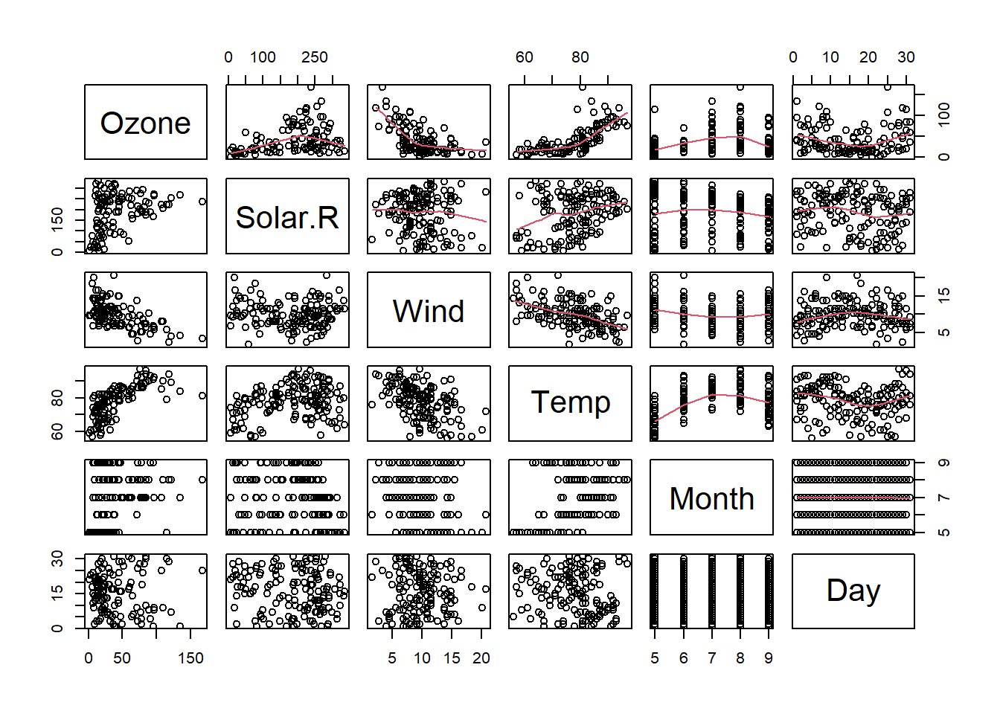
Del resumen numérico se obtiene que hay 2 variables Ozone y Solar.R que contienen NAs, principalmente la primera con 37 valores no disponibles. Estos resúmenes, junto con la visualización de la estructura (y la consulta de las unidades en las que están medidas) permiten determinar que las variables Ozone, Solar.R, Wind y Temp se pueden considerar cuantitativas continuas (obsérvense sus rangos) a los efectos de modelización lineal, aunque sólo Wind esté definida como num (y el resto como int). Sobre Temp, viendo el rango de sus valores (de 56 a 97), no parece que estén en ºC (en la ayuda se puede ver que está en grados Fahrenheit). ¿Y cómo considerar a la variable Month? El tratamiento más adecuado es como variable cualitativa, dado que, aunque vemos valores numéricos, de 5 a 9, no puede interpretarse como una variable continua en la que tenga sentido incrementar 1 unidad. Además, otorgarle valores 5 a 9 es un convenio para tratarla por ordenador de una manera más cómoda, pero realmente sus valores son mayo, junio… Queda así más claro que no tiene sentido aumentar 1 unidad, por ejemplo, cuando estamos en el mes 12.
De los diagramas de dispersión, al incluir el argumento panel.smooth se pueden observar líneas de tendencias suavizadas de los datos. Se aprecia que casi ninguna de las relaciones entre las variables numéricas es lineal, sólo lo parece Wind frente a Temp. Los gráficos que involucran a la variable Month se aprecian distintos al resto, por los pocos valores de dicha variable, mientras que los que involucran a Day no reflejan lo mismo.
Alternativas: Existen distintas funciones/paquetes más o menos sofisticados que realizan este análisis exploratorio de distintas maneras. El lector interesado puede explorar:
- El paqueteskimry su funciónskim().
- El paquetesummarytoolsy su funcióndfSummary().
- …
Por ejemplo, con las siguientes funciones se pueden obtener gráficos complementarios al gráfico obtenido anteriormente con
pairs().
#Es necesario tener los paquetes instalados previamente
library(corrplot)
corrplot(cor(airquality, use = "pairwise.complete.obs"))
library(GGally)
ggpairs(airquality)
ggpairs(airquality,
#Para que aparezcan los diagramas de dispersión "arriba"
upper = list(continuous = wrap("points", alpha = 0.7)),
#correlaciones "abajo", etc.
lower = list(continuous = wrap("cor", size = 4)),
diag = list(continuous = wrap("densityDiag"))) 1.4.2 lm() simple
Para ilustrar la teoría de la Sección 1.2 se va a realizar aquí una regresión simple. La función lm() de R proporciona, a partir de los datos disponibles, la estimación de los parámetros del modelo que se especifique. También se pueden obtener, aplicando distintas funciones, la significación de dichas estimaciones, sus intervalos de confianza, predicciones, etc. Así como los gráficos de diagnóstico.
Modelización
A diferencia del libro CDR, se considera para empezar un modelo de regresión simple. De entre los posibles modelos nos decantamos por intentar explicar la concentración de Ozono en función de la radiación solar: \[Ozone_i = \beta_0 + \beta_1 Solar.R_i + \epsilon_i\]
Tarea
El lector tiene aquí una buena tarea conceptual: ejercitarse en plantear modelizaciones lineales, que ¡tengan sentido práctico!
En este ejemplo se va a intentar explicar/predecirOzoneen función de los valores deSolar.Robservados. ¿Tendría sentido plantearlo al revés? ¿Y otras combinaciones: explicar/predecirDayen función deOzone,Winden función deTemp…? …
En R definiríamos así el modelo anterior:
modelo <- Ozone ~ Solar.RNota: la sintaxis básica (regresión simple) es
y ~ x.
La extensión a regresión múltiple es directa:y ~ x1 + x2indicaría un modelo con predictoresx1yx2, y así sucesivamente.
En el ejemplo de regresión múltiple se indican algunos “trucos/atajos” para definir modelos.
Tarea
¿Cómo obtener la regresión de proporcionalidad directa conR?
Estimación
En R puede obtenerse de varias maneras utilizando la función lm():
Nota: la función lm() aplicada a un modelo simple
y ~ x(o múltiple) requiere que los datos de las variablesyyxestén en elEnvironment, o se especifique endatael conjunto de datos en el que están las dos variables.
#Opción 1: aprovechando la definición anterior del modelo
#lm(modelo, data = airquality)
#Opción 2: directa ==> lectura más clara
lm(Ozone ~ Solar.R,
data = airquality)
Call:
lm(formula = Ozone ~ Solar.R, data = airquality)
Coefficients:
(Intercept) Solar.R
18.5987 0.1272 Aquí se pueden ver las estimaciones de los dos parámetros, obtenidas a partir de los datos disponibles (omitiendo las observaciones con valores NA; en la salida no hay ningún aviso al respecto, pero se verá más adelante). Se podría comprobar que tales estimaciones pueden obtenerse aplicando las fórmulas obtenidas para \(\hat \beta_0^{MC}\) y \(\hat \beta_1^{MC}\) en la Sección 1.2.2 (Método de mínimos cuadrados).
Guardamos en un objeto, que denominamos rls.Ozone, el ajuste/estimación basado en los datos, para su uso posterior:
rls.Ozone <- lm(Ozone ~ Solar.R, data = airquality)Diagrama de dispersión y recta estimada
Dado que se está analizando la relación entre dos variables, esta se puede visualizar fácilmente en un diagrama de dispersión, al que se puede añadir la recta estimada a partir de los datos.
par(pty = "s") # "p"lot "ty"pe "s"quare (RECOMENDACIÓN para gráficos de dispersión)
plot(airquality$Solar.R, airquality$Ozone)
# Alternativa: plot(Ozone ~ Solar.R, data = airquality)
abline(rls.Ozone, col = "red")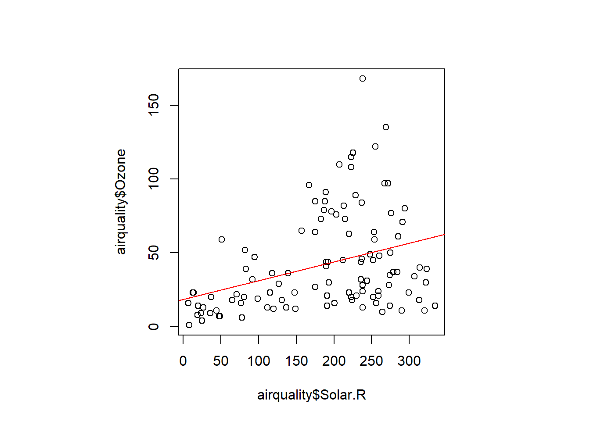
# Alternativa: abline(a=18.5987, b=0.1272, col = "red") # a = Intercept, b = slopeNota: la función
abline()permite incorporar cualquier recta en formato “a + bx”, indicándole los valores de “a” y de “b”.
En planteamientos de regresión múltiple con dos variables explicativas se puede obtener un diagrama de dispersión en 3 dimensiones y añadirle el plano de regresión, pero suele ser compleja su visualización. Con más variables es imposible obtener tales visualizaciones, diagramas de dispersión en \(k\) dimensiones e hiperplanos de regresión, lo que conduce a abordar el problema de regresión múltiple mediante un proceso de abstracción.
Análisis de residuos
Valoremos la adecuación del modelo examinando los residuos.
par(mfrow = c(2, 2), #presenta los gráficos en formato 2x2
pty = "s",
mex = 0.66,
cex = 0.75)
plot(rls.Ozone)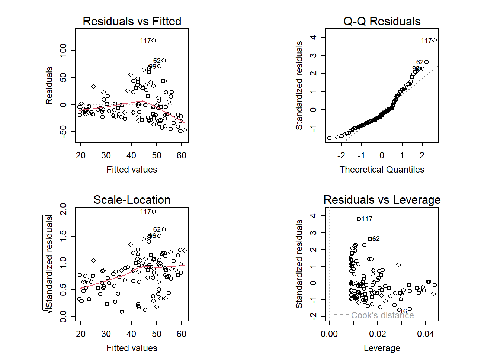
Aplicando los criterios discutidos en la Sección 1.2.6 (Diagnosis):
El primero de los 4 gráficos de diagnóstico (Residuals vs Fitted) muestra una aparente linealidad: la línea suavizada incluida es bastante plana, salvo en la parte final. Además sugiere heterocedasticidad (varianza no constante, forma de embudo), tal y como ya se podía apreciar en el diagrama de dispersión de
Solar.Rfrente aOzoneque se obtuvo anteriormente. En este gráfico de aquí, conforme aumenta el valor de los valores estimados (fitted), la dispersión de los residuos se hace más grande, salvo, de nuevo, en la parte final.Aplicamos también el contraste de Breusch-Pagan:
lmtest::bptest(rls.Ozone)studentized Breusch-Pagan test data: rls.Ozone BP = 7.8952, df = 1, p-value = 0.004956Que lleva a rechazar la homocedasticidad.
El gráfico que mejor refleja esa heterocedasticidad es el de Scale-Location, donde la línea roja de tendencia dista de la horizontalidad (que reflejaría homocedasticidad) teniendo una pendiente positiva (ligera, pero apreciable).
Respecto a la normalidad, a la vista del gráfico Q-Q Residuals, se observa una clara desviación de la línea recta punteada (que marcaría el ajuste perfecto a la distribución normal), sobre todo en la parte superior derecha. Para reforzar la impresión de este gráfico se puede acudir a otras visualizaciones y a contrastes:
par(mfrow = c(1,2)) hist(residuals(rls.Ozone)) car::qqPlot(residuals(rls.Ozone))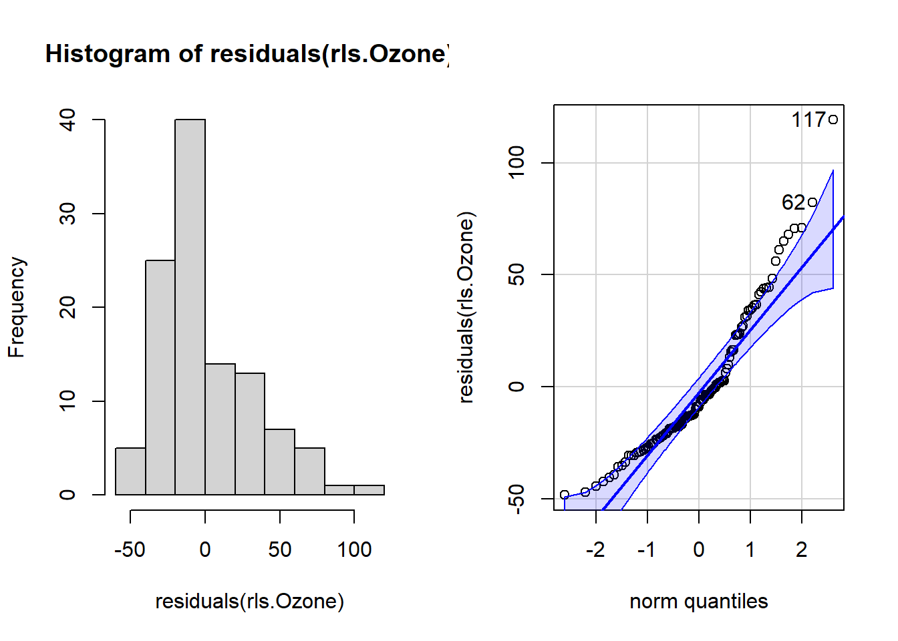
117 62 77 34shapiro.test(residuals(rls.Ozone))Shapiro-Wilk normality test data: residuals(rls.Ozone) W = 0.91418, p-value = 2.516e-06El histograma refleja una clara asimetría, contraria a la simetría de la distribución normal. En este otro gráfico Q-Q se aprecian numerosos puntos fuera de la banda de confianza. Y el p-valor del contraste de Shapiro-Wilk lleva claramente a rechazar la normalidad.
El último de los 4 gráficos de residuos (Residuals vs Leverage) señala las observaciones 117 y 62 como los valores con más influencia en los resultados de la regresión. Pero en este último gráfico no presentan un valor grande de la distancia de Cook, que sirve para medir esa influencia. De hecho, no aparecen en el gráfico las líneas discontinuas que marcan los límites para considerar un valor grande de la distancia, \(D_i > 0.5\) y \(D_i>1\), que llevaría a identificar posibles observaciones influyentes (en ejemplos posteriores sí aparecen esas líneas discontinuas).
Nota: los valores de leverage se pueden obtener usando la función
hatvalues().Y la función
plot()aplicada a un objeto de tipolmen realidad calcula 6 gráficos, que se pueden obtener así:plot(rls.Ozone, which = 1:6)
En resumen, es claro que hay dos observaciones que pueden influir en los resultados de la regresión, pero también es claro que los problemas observados (heterocedasticidad, falta de normalidad…) no parecen provenir sólo de esos dos datos.
Tarea
Repita el análisis manteniendoOzonecomo variable respuesta/dependiente, cambiando la variable explicativaSolar.RporWindoTemp. ¿Alguna diferencia notable respecto a lo aquí expuesto?
Alternativas: Existen distintas funciones/paquetes más o menos sofisticados que realizan este análisis de residuos de distintas maneras. El lector interesado puede explorar:
- El paqueteggfortifyy su funciónautoplot().
- El paqueteperformancey su funcióncheck_model().
- …
#Es necesario tener los paquetes instalados previamente
library("ggfortify")
autoplot(rls.Ozone) +
theme_minimal()
library(performance)
library(see)
check_model(rls.Ozone)Post interesante:Understanding Diagnostic Plots for Linear Regression Analysis
Interpretación e Inferencia
Supongamos que fuese todo correcto. El siguiente paso sería el de averiguar la significación de los parámetros, interpretarlos y obtener alguna predicción de interés. Aplicamos la función summary() a nuestro objeto rls.Ozone:
summary(rls.Ozone)
Call:
lm(formula = Ozone ~ Solar.R, data = airquality)
Residuals:
Min 1Q Median 3Q Max
-48.292 -21.361 -8.864 16.373 119.136
Coefficients:
Estimate Std. Error t value Pr(>|t|)
(Intercept) 18.59873 6.74790 2.756 0.006856 **
Solar.R 0.12717 0.03278 3.880 0.000179 ***
---
Signif. codes: 0 '***' 0.001 '**' 0.01 '*' 0.05 '.' 0.1 ' ' 1
Residual standard error: 31.33 on 109 degrees of freedom
(42 observations deleted due to missingness)
Multiple R-squared: 0.1213, Adjusted R-squared: 0.1133
F-statistic: 15.05 on 1 and 109 DF, p-value: 0.0001793En esta salida obtenemos, además de las estimaciones que ya habíamos obtenido anteriormente, \(\hat{\beta}_0\) y \(\hat{\beta}_1\) (columna Estimate), mucha información para su interpretación.
Nota: aparece una nota/comentario “(42 observations deleted…” que indica cómo se han tratado los
NA: ¡Se ha eliminado la información de 42 observaciones!
En la última columna Pr(>|t|) se pueden ver los p-valores de cada estimación. El asociado a la variable Solar.R es muy pequeño, pudiéndose concluir, en caso de que el modelo fuese válido, que la variable Solar.R se asocia significativamente con la variable Ozone.
Nota: conviene ser cuidadoso con los términos utilizados. Se ha comentado anteriormente la diferencia entre estudios observacionales y experimentales. Estos últimos están pensados y diseñados para encontrar influencias o causalidad, mientras que los primeros, por el hecho de ser observacionales, sólo permiten encontrar asociación o covariación. Así, en la interpretación anterior se ha utilizado el término “asocia” para hablar de la relación entre
Solar.RyOzone.
De la misma manera, la estimación \(\hat \beta_0\) ((Intercept), intersección/ordenada en el origen) es significativa, lo que indica que el modelo no pasa por el origen de coordenadas. Ahora bien, dado que el análisis de residuos muestra problemas de adecuación, estas conclusiones deben tomarse con cautela.
Independientemente, los p-valores obtenidos provienen de la estimación del estadístico \(t\) que se encuentra en la columna t value, que a su vez se basa en la mencionada estimación de cada parámetro (columna Estimate) y el error estándar (columna Std. Error) (véase Sección 1.2.5 -Contrastes de hipótesis-). A partir de estos dos valores y la distribución \(t\) correspondiente, en este caso \(t_{109}\), se pueden obtener los intervalos de confianza “a mano” (paso a paso con R, aplicando las fórmulas de la Sección 1.2.8.1 -Errores estándar de los estimadores-), pero se dispone de la función confint():
confint(rls.Ozone) 2.5 % 97.5 %
(Intercept) 5.22460110 31.9728544
Solar.R 0.06220373 0.1921268Si el modelo fuese válido se pasaría a la interpretación de estos parámetros (pero, en este caso, al presentar el modelo problemas de adecuación, las interpretaciones no son concluyentes). Primero, el signo de \(\hat{\beta}_1\), al ser positivo, indica que conforme aumenta Solar.R también aumenta Ozone en términos medios. Ahora bien, no sólo se obtiene esa relación positiva, sino la magnitud de dicha relación. Así, el cambio de 1 unidad (langley) en Solar.R implicaría un cambio medio de aproximadamente 0.1272 unidades (ppb) en Ozone, con un valor medio de 18.5987 ppb de Ozone en ausencia de radiación solar (¡Ojo! Con los datos disponibles, el mínimo valor de Solar.R es 7, según la tabla del resumen numérico, por lo que la estimación en ausencia de radiación solar es una extrapolación que necesitaría del conocimiento de un experto en la materia para dilucidar su apropiada y/u oportuna interpretación).
Por último, en la salida también encontramos el valor Residual standard error, en este caso, 31.33 unidades, por lo que las concentraciones de Ozone observadas se alejan de los valores estimados por el modelo en una magnitud típica de aproximadamente 31.33 ppb.
Bondad de ajuste
En la salida anterior de la función summary() también se pueden observar resultados que ayudan a proporcionar la bondad de ajuste de la regresión simple planteada. El valor que resume la bondad de ajuste es el Multiple R-squared, aunque, como se ha mencionado en la Sección 1.3.2 (Bondad de ajuste), para comparar entre modelos conviene hacerlo con el Adjusted R-squared que arroja un valor de
rls.Ozone.summ <- summary(rls.Ozone) #guardamos el objeto generado con summary()
#con names() listamos distintos componentes generados con summary()
names(rls.Ozone.summ) #también se puede consultar con ?summary.lm [1] "call" "terms" "residuals" "coefficients"
[5] "aliased" "sigma" "df" "r.squared"
[9] "adj.r.squared" "fstatistic" "cov.unscaled" "na.action" rls.Ozone.summ$adj.r.squared[1] 0.1132809Este 11.3% se puede considerar “pobre”. La variable Solar.R explica “pobremente” la variabilidad de Ozone. No obstante, el p-valor global del modelo que se muestra en la última línea de la salida de summary() es significativo, indicando que la recta de regresión es significativa, esto es, que es mejor que proporcionar sólo la media de Ozone para cualquier valor de Solar.R que sería el denominado modelo nulo (básico).
Pregunta
¿Sabe decir por qué el p-valor de la recta de regresión coincide con el del parámetro asociado aSolar.R?
También se puede observar el valor del Residual standard error y sus grados de libertad, \(n-2\) (véase Sección 1.2.3.1 -Estimación de la varianza del modelo-). Aunque, en este caso, como se ha comentado, 42 observations deleted due to missingness, y por lo tanto, los grados de libertad quedan en \(109\).
Predicción
A pesar de que el modelo no es idóneo para explicar el fenómeno, puede que la regresión simple sirva para el propósito de predecir valores. Pasamos a ilustrar cómo se obtendrían con R predicciones a partir de la recta estimada:
predict(rls.Ozone, data.frame(Solar.R = c(10, 100, 300)),
interval = "confidence") fit lwr upr
1 19.87038 7.076164 32.66460
2 31.31525 23.247138 39.38337
3 56.74831 47.222078 66.27454predict(rls.Ozone, data.frame(Solar.R = c(10, 100, 300)),
interval = "prediction") fit lwr upr
1 19.87038 -43.537910 83.27867
2 31.31525 -31.310729 93.94124
3 56.74831 -6.082164 119.57878Con el argumento interval = "confidence" obtenemos intervalos de confianza (para valores medios), con interval = "prediction" obtenemos intervalos de predicción (para valores individuales) para la predicción de Ozone dados valores de Solar.R. Concretamente para 3 valores: 10, 100 y 300, todos ellos en el rango de valores observados de la variable. La estimación media (fit) coincide en ambos casos, diferenciándose en la amplitud de los intervalos, mucho mayores para los intervalos de predicción, dado que, para el mismo valor de Solar.R, una observación individual puede alejarse mucho más de la media, que una media de varias observaciones.
Pregunta
¿Cómo se interpretan en este caso los valoreslwrde las predicciones individuales?
1.4.3 lm() múltiple
Modelización y estimación
Se aborda aquí una regresión múltiple ligeramente distinta a la del libro CDR. Directamente en formato de R:
rlm.Ozone <- lm(Ozone ~ Solar.R + Wind + Temp + Month, data = airquality)
# Equivalentemente
#rlm.Ozone <- lm(Ozone ~ . - Day, data = airquality)Trucos/atajos: para no escribir todas las variables, se puede hacer uso de “
.”:
lm(y ~ ., data)indica una regresión conycomo variable respuesta, y el resto de variables dedatacomo predictores lineales.
En este caso, se debe usar “-” para quitar la variable indicada (Day) (que no tiene sentido incluir en el modelo).
Nota: este modelo está mal especificado en
Month, puesRla toma como numérica (cuando es categórica, como se ha mencionado en la exploración de los datos). Se deja así a efectos de comparación con la Sección 1.4.3.1, donde se redefine comofactory así se estima correctamente.
Análisis de residuos
par(mfrow = c(2, 2), #presenta los gráficos en formato 2x2
pty = "s",
mex = 0.66,
cex = 0.75)
plot(rlm.Ozone)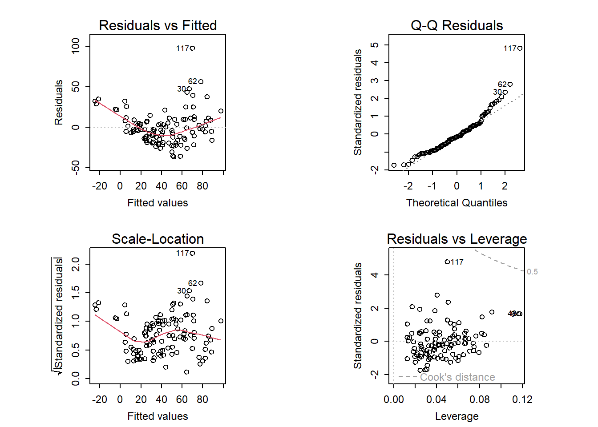
Pregunta
¿Se ha mejorado respecto a la regresión simple?
Nota: ahora, en el 4º gráfico (Residuals vs Leverage) sí que aparece la línea punteada del valor 0.5 de la distancia de Cook, que no llega a alcanzar ninguno de los residuos estandarizados.
Interpretación
summary(rlm.Ozone)
Call:
lm(formula = Ozone ~ Solar.R + Wind + Temp + Month, data = airquality)
Residuals:
Min 1Q Median 3Q Max
-35.870 -13.968 -2.671 9.553 97.918
Coefficients:
Estimate Std. Error t value Pr(>|t|)
(Intercept) -58.05384 22.97114 -2.527 0.0130 *
Solar.R 0.04960 0.02346 2.114 0.0368 *
Wind -3.31651 0.64579 -5.136 1.29e-06 ***
Temp 1.87087 0.27363 6.837 5.34e-10 ***
Month -2.99163 1.51592 -1.973 0.0510 .
---
Signif. codes: 0 '***' 0.001 '**' 0.01 '*' 0.05 '.' 0.1 ' ' 1
Residual standard error: 20.9 on 106 degrees of freedom
(42 observations deleted due to missingness)
Multiple R-squared: 0.6199, Adjusted R-squared: 0.6055
F-statistic: 43.21 on 4 and 106 DF, p-value: < 2.2e-16Si del análisis de residuos queda validado el modelo, se pueden interpretar los parámetros del modelo estimado, ¿qué explican/aportan?, o ¿cómo se asocian?, cada uno con la respuesta (siempre en términos medios).
De la salida anterior se desprende que, de las 4 variables consideradas, la más significativa es Temp, seguida de Wind (ambas con 3 asteriscos, pero distinto p-valor). También es significativa Solar.R, pero a otro nivel (sólo un asterisco, por un p-valor inferior al 5% pero superior al 1%, cuando en la regresión simple tenía un p-valor más pequeño/significativo, 2 asteriscos). El último predictor, Month, (como variable continua) es significativa pero a un nivel del 10% (como ya se ha dicho, en la siguiente sección se redefine apropiadamente Month para su correcta interpretación). Por último, el término independiente también es significativo al 5% (-el hiperplano estimado no pasa por el origen de coordenadas-).
Sobre la interpretación de los parámetros, como se ha mencionado en la Sección 1.2.7, se deben tener en cuenta las unidades en las que están recogidas cada una de las variables. Y cualquier cambio de escala influirá en dichas estimaciones, y generalmente en sus Std. Error (salvo traslaciones de las variables).
Además, la interpretación de las estimaciones (magnitud) como cambios en la variable respuesta tiene ahora un cambio sustancial. El cambio en la variable respuesta de 1 unidad de una de las variables explicativas está condicionado a que el resto de variables explicativas no cambien, lo que en el contexto de la Economía se denomina ceteris paribus, y que puede que sea imposible de cumplirse. Por ejemplo, el parámetro asociado a Solar.R es, para este modelo de regresión múltiple, 0.0496 menos de la mitad de magnitud que en el caso de regresión simple. Ese sería el cambio medio en las unidades de Ozone para cambios de 1 unidad en Solar.R siempre que Wind, Temp y Month tengan los mismos valores, o, dicho de otro modo, para otra observación que tuviese los mismos valores de Wind, Temp y Month, y cambiase 1 unidad Solar.R. Si es que es factible el cambio de Solar.R con idénticos valores del resto de variables.
Otra lectura que se puede hacer sobre la interpretación de la magnitud del parámetro estimado es que, al ser independiente del resto de valores de las variables, es, a su vez, para cualquier combinación de dichos valores. Por ejemplo, para valores de Wind altos, medios o bajos, combinado con valores de Temp altos, medios o bajos, o para cualquier Month (entre 5 y 9, que es el rango observado).
Pregunta
¿Cómo se interpreta el valor negativo del término independiente si se trata de la concentración de ozono en partes por billón?
Respecto al Residual standard error, su valor ha disminuido respecto a la regresión simple, situándose ahora en 20.9 unidades (ppb).
Bondad de ajuste
La bondad del ajuste de este modelo, ha mejorado notoriamente en comparación con la regresión simple anterior, pasando ahora a un Adjusted R-squared de 0.606 (cuando el de la simple era 0.113).
Si nuestro interés sólo fuese predecir valores de Ozone, este modelo podría servirnos.
Predicción
¿Cómo se pueden obtener predicciones con un modelo de regresión múltiple?
Se deben proporcionar valores a cada una de las variables del modelo:
nuevas.observ <- data.frame(Solar.R = c(110, 110, 110),
Wind = c(5, 8, 20),
Temp = c(72, 79, 86),
Month = c(6, 6, 6))
predict(rlm.Ozone, newdata = nuevas.observ,
interval = "confidence") # interval = "prediction" fit lwr upr
1 47.57241 37.772741 57.37208
2 50.71900 43.340574 58.09742
3 24.01700 6.391306 41.642701.4.3.1 Predictores cualitativos
El uso de variables explicativas cualitativas debe tratarse de forma diferencial en R. Deben definirse como factor, (factor()). Así, al estimar R los parámetros del modelo donde se incluya dicha variable, generará automáticamente variables ficticias (dummy). La función contrasts() permite conocer la codificación que por defecto usa R para dichas variables ficticias (aunque se puede modificar). Para ilustrarlo, redefinimos la variable Month en el conjunto de datos airquality (siguiendo el consejo de la exploración de datos).
airquality$Month <- factor(airquality$Month)
contrasts(airquality$Month) 6 7 8 9
5 0 0 0 0
6 1 0 0 0
7 0 1 0 0
8 0 0 1 0
9 0 0 0 1La salida indica que el valor 5 de Month se toma como valor de referencia (en su fila aparecen todo ceros), y se generan 4 variables dummy, una para cada uno de los meses restantes (del 6 al 9).
Nota: en
Rlas variables definidas comofactortoman como referencia la primera categoría al ordenar los valores de la variable, bien alfabéticamente (a, b, c…) o bien numéricamente de menor a mayor, aunque se puede especificar otro orden (véase Sección 1.5.1 -Exploración de los datos (Boston)-).
Estimamos de nuevo el modelo de regresión múltiple.
rlm.Ozone.cualit <- lm(Ozone ~ . - Day,
data = airquality)
summary(rlm.Ozone.cualit)
Call:
lm(formula = Ozone ~ . - Day, data = airquality)
Residuals:
Min 1Q Median 3Q Max
-40.344 -13.495 -3.165 10.399 92.689
Coefficients:
Estimate Std. Error t value Pr(>|t|)
(Intercept) -74.23481 26.10184 -2.844 0.00537 **
Solar.R 0.05222 0.02367 2.206 0.02957 *
Wind -3.10872 0.66009 -4.710 7.78e-06 ***
Temp 1.87511 0.34073 5.503 2.74e-07 ***
Month6 -14.75895 9.12269 -1.618 0.10876
Month7 -8.74861 7.82906 -1.117 0.26640
Month8 -4.19654 8.14693 -0.515 0.60758
Month9 -15.96728 6.65561 -2.399 0.01823 *
---
Signif. codes: 0 '***' 0.001 '**' 0.01 '*' 0.05 '.' 0.1 ' ' 1
Residual standard error: 20.72 on 103 degrees of freedom
(42 observations deleted due to missingness)
Multiple R-squared: 0.6369, Adjusted R-squared: 0.6122
F-statistic: 25.81 on 7 and 103 DF, p-value: < 2.2e-16Se puede observar que se muestran parámetros para las 4 variables dummy de los 5 valores de Month. Como se ha indicado, el primer valor de la variable (el 5) lo toma como referencia y genera 4 variables dicotómicas que reflejan el cambio de la categoría de referencia a cada una de ellas. Matemáticamente el modelo que se estima es: \[\begin{align*}
Ozone_i = &\beta_0 + \beta_1 Solar.R_i + \beta_2 Wind_i + \beta_3 Temp_i + \\
&\beta_6 Month6_i + \beta_7 Month7_i + \beta_8 Month8_i + \beta_9 Month9_i + \epsilon_i
\end{align*}\]
Nota técnica: se ha prescindido de los parámetros \(\beta_4\) y \(\beta_5\) simplemente por concordancia con los meses.
Así, se entiende ahora mejor la visualización de contrasts() obtenida anteriormente. Cuando Month6, Month7… toman todos el valor 0 la estimación que se obtiene es del mes de mayo. Si la variable dummy Month6 toma el valor 1, y las otras 3 toman el valor 0, se obtiene la diferencia media de Ozone respecto al mes de mayo, ceteris paribus. Por lo tanto, que el parámetro asociado a Month6 sea negativo implica que, para cualquier combinación fija de valores del resto de variables, en junio disminuye la media de Ozone respecto a mayo (aunque justo este parámetro/cambio ¡no es significativo!).
Pregunta
¿Cómo se interpreta ahora el valor delIntercept?
¿Y cómo se explica el valor negativo deMonth6a la vista del resumen gráfico que se obtuvo conpairs()?
1.5 Caso práctico: Boston
El segundo de los casos prácticos de modelización lineal que se va a tratar en profundidad utiliza los datos Boston, incluidos en varios paquetes, por ejemplo, en ISLR2 asociado con el libro (James et al. (2013)). Los datos recogen valores relacionados con viviendas para 506 distritos censales de Boston. Un estudio de modelización lineal se puede encontrar en https://hastie.su.domains/ISLR2/Labs/Rmarkdown_Notebooks/Ch3-linreg-lab.html y el Rscript asociado en: https://hastie.su.domains/ISLR2/Labs/R_Labs/Ch3-linreg-lab.R. De nuevo, aquí se presentan ejemplos ligeramente distintos y con más detalle.
1.5.1 Exploración de los datos
library(ISLR2)
#?Boston #Para obtener más información sobre las variables, unidades, etc.
head(Boston) crim zn indus chas nox rm age dis rad tax ptratio lstat medv
1 0.00632 18 2.31 0 0.538 6.575 65.2 4.0900 1 296 15.3 4.98 24.0
2 0.02731 0 7.07 0 0.469 6.421 78.9 4.9671 2 242 17.8 9.14 21.6
3 0.02729 0 7.07 0 0.469 7.185 61.1 4.9671 2 242 17.8 4.03 34.7
4 0.03237 0 2.18 0 0.458 6.998 45.8 6.0622 3 222 18.7 2.94 33.4
5 0.06905 0 2.18 0 0.458 7.147 54.2 6.0622 3 222 18.7 5.33 36.2
6 0.02985 0 2.18 0 0.458 6.430 58.7 6.0622 3 222 18.7 5.21 28.7Ahora no se observan valores NAs (en el resumen numérico se va a ver que no hay). No obstante, se puede comprobar con:
sum(is.na(Boston))[1] 0Estructura y resúmenes
str(Boston)'data.frame': 506 obs. of 13 variables:
$ crim : num 0.00632 0.02731 0.02729 0.03237 0.06905 ...
$ zn : num 18 0 0 0 0 0 12.5 12.5 12.5 12.5 ...
$ indus : num 2.31 7.07 7.07 2.18 2.18 2.18 7.87 7.87 7.87 7.87 ...
$ chas : int 0 0 0 0 0 0 0 0 0 0 ...
$ nox : num 0.538 0.469 0.469 0.458 0.458 0.458 0.524 0.524 0.524 0.524 ...
$ rm : num 6.58 6.42 7.18 7 7.15 ...
$ age : num 65.2 78.9 61.1 45.8 54.2 58.7 66.6 96.1 100 85.9 ...
$ dis : num 4.09 4.97 4.97 6.06 6.06 ...
$ rad : int 1 2 2 3 3 3 5 5 5 5 ...
$ tax : num 296 242 242 222 222 222 311 311 311 311 ...
$ ptratio: num 15.3 17.8 17.8 18.7 18.7 18.7 15.2 15.2 15.2 15.2 ...
$ lstat : num 4.98 9.14 4.03 2.94 5.33 ...
$ medv : num 24 21.6 34.7 33.4 36.2 28.7 22.9 27.1 16.5 18.9 ...summary(Boston) crim zn indus chas
Min. : 0.00632 Min. : 0.00 Min. : 0.46 Min. :0.00000
1st Qu.: 0.08205 1st Qu.: 0.00 1st Qu.: 5.19 1st Qu.:0.00000
Median : 0.25651 Median : 0.00 Median : 9.69 Median :0.00000
Mean : 3.61352 Mean : 11.36 Mean :11.14 Mean :0.06917
3rd Qu.: 3.67708 3rd Qu.: 12.50 3rd Qu.:18.10 3rd Qu.:0.00000
Max. :88.97620 Max. :100.00 Max. :27.74 Max. :1.00000
nox rm age dis
Min. :0.3850 Min. :3.561 Min. : 2.90 Min. : 1.130
1st Qu.:0.4490 1st Qu.:5.886 1st Qu.: 45.02 1st Qu.: 2.100
Median :0.5380 Median :6.208 Median : 77.50 Median : 3.207
Mean :0.5547 Mean :6.285 Mean : 68.57 Mean : 3.795
3rd Qu.:0.6240 3rd Qu.:6.623 3rd Qu.: 94.08 3rd Qu.: 5.188
Max. :0.8710 Max. :8.780 Max. :100.00 Max. :12.127
rad tax ptratio lstat
Min. : 1.000 Min. :187.0 Min. :12.60 Min. : 1.73
1st Qu.: 4.000 1st Qu.:279.0 1st Qu.:17.40 1st Qu.: 6.95
Median : 5.000 Median :330.0 Median :19.05 Median :11.36
Mean : 9.549 Mean :408.2 Mean :18.46 Mean :12.65
3rd Qu.:24.000 3rd Qu.:666.0 3rd Qu.:20.20 3rd Qu.:16.95
Max. :24.000 Max. :711.0 Max. :22.00 Max. :37.97
medv
Min. : 5.00
1st Qu.:17.02
Median :21.20
Mean :22.53
3rd Qu.:25.00
Max. :50.00 A la vista de la estructura y el resumen numérico, se pueden considerar continuas casi todas las variables (internamente están definidas en R como double o int, para manejar números reales con formato de coma flotante de doble precisión que requieren más espacio en memoria o enteros, respectivamente). Llama la atención el resumen de las variables zn, chas y rad. La variable zn está definida internamente como double porque contiene algunos valores con decimales (y mirando su definición es una proporción). Ahora bien, su mediana es 0, por lo que al menos la mitad de los 506 valores son 0, de hecho el 0 aparece 372 veces. Esto, sin duda, tendrá un impacto al considerarlo en los modelos. Por su parte, las variables chas y rad tienen formato int, pero acudiendo a su definición, chas es dicotómica (con ¡mediana 0! y ¡media 0.0692!), mientras que rad es un índice, que toma valores entre 1 y 24. Se dejan zn y rad con valores numéricos, pero, para su apropiado manejo en los modelos, es oportuno convertir chas en variable factor de R:
Boston$chas <- factor(Boston$chas)
contrasts(Boston$chas) 1
0 0
1 1Como se puede ver con la función contrasts() en los casos de variable dicotómica sólo se genera una variable dummy, quedando por defecto el valor 0 como valor de referencia. Rizando el rizo, vamos a cambiar la definición del valor de referencia para luego observar su impacto en la modelización.
Boston$chas <- factor(Boston$chas,
levels = c(1, 0))
contrasts(Boston$chas) 0
1 0
0 1pairs(Boston, upper.panel = NULL,
lower.panel = panel.smooth)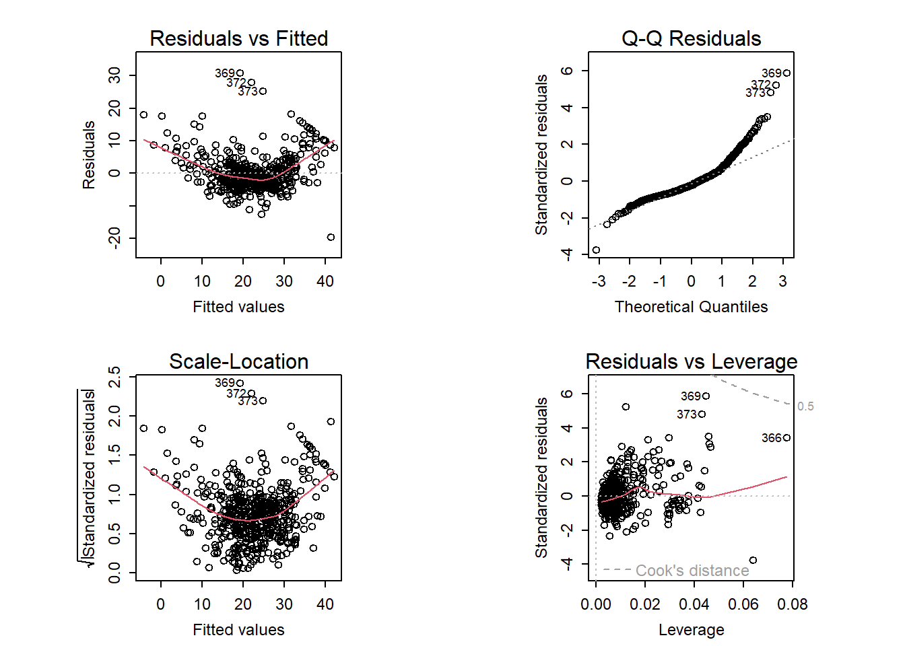
A la vista del resumen gráfico, diagramas de dispersión de pares de variables, casi todas las relaciones entre pares de variables parecen no lineales. Como se puede apreciar, la dicotomía de la variable chas genera “diagramas de dispersión” muy distintos al resto. Y las variables rad y tax llaman la atención por presentar dos grupos de valores alejados, especialmente rad. También, la variable nox presenta dos grupos de valores pero con menor separación entre grupos.
1.5.2 lm() múltiple
Modelización y estimación
La variable de interés a modelizar es medv (“median value”: valor mediano de las casas ocupadas por sus propietarios, en $1000s). En el libro ISLR2, James et al. (2013), utilizan las otras 12 variables explicativas como predictores. Aquí se consideran sólo unas cuantas (ojo con lo que recogen cada una de las variables… ¿age?):
rlm.Boston <- lm(medv ~ lstat + rm + age + tax + chas, #chas definida como factor
data = Boston)
summary(rlm.Boston)
Call:
lm(formula = medv ~ lstat + rm + age + tax + chas, data = Boston)
Residuals:
Min 1Q Median 3Q Max
-19.358 -3.345 -1.124 1.930 30.073
Coefficients:
Estimate Std. Error t value Pr(>|t|)
(Intercept) 4.323355 3.270507 1.322 0.187
lstat -0.588092 0.055117 -10.670 < 2e-16 ***
rm 4.954530 0.440829 11.239 < 2e-16 ***
age 0.014624 0.011379 1.285 0.199
tax -0.007009 0.001756 -3.990 7.58e-05 ***
chas0 -3.898106 0.955381 -4.080 5.24e-05 ***
---
Signif. codes: 0 '***' 0.001 '**' 0.01 '*' 0.05 '.' 0.1 ' ' 1
Residual standard error: 5.372 on 500 degrees of freedom
Multiple R-squared: 0.6622, Adjusted R-squared: 0.6588
F-statistic: 196 on 5 and 500 DF, p-value: < 2.2e-16Se han unificado la modelización y estimación, como se hace generalmente. Posteriormente se realizará el análisis de residuos que permitirá dar validez al modelo considerado.
Nota: un comentario sobre la línea de
chas0que aparece en la salida anterior. Este resultado es fruto de la última codificación de la variablechasponiendo como referencia el valor “1”. Por ello, como ya se ha mencionado, se muestra la estimación, etc. del parámetro asociado al otro nivel de la variable chas, el nivel “0”.
Tarea
Vuelva a codificar la variablechascomo factor con valor de referencia “0”, para observar cómo afecta el “cambio de base”.
En este caso, los parámetros asociados a las variables resultan significativos al 5%, excepto uno. Este hecho nos lleva aquí a eliminar dicha variable del modelo, para obtener uno con sólo variables que se asocian con medv. Ahora bien, es una decisión que hay que tomar teniendo en cuenta el contexto del problema (quizá age es una variable importante en el análisis y debe mantenerse, aunque su efecto estadístico no sea significativo).
La consecuencia de que algunos parámetros no sean significativos al 5% también se puede apreciar en sus intervalos de confianza al correspondiente 95%… Los no significativos incluyen el valor 0.
confint(rlm.Boston) 2.5 % 97.5 %
(Intercept) -2.102274869 10.748985289
lstat -0.696380539 -0.479802930
rm 4.088424014 5.820635797
age -0.007732991 0.036981489
tax -0.010459310 -0.003557925
chas0 -5.775162051 -2.0210507011.5.2.1 Quitando predictores
Como ilustración del proceso iterativo (manual) de modelización, pasamos a estimar un nuevo modelo en el que eliminamos la variable no significativa que se obtuvo en el modelo anterior rlm.Boston, esto es quitando age:
rlm.BostonModif <- lm(medv ~ lstat + rm + tax + chas, data = Boston)
#Alternativamente, usando la función `update()`.
#rlm.BostonModif <- update(rlm.Boston, ~ . - age)
summary(rlm.BostonModif)
Call:
lm(formula = medv ~ lstat + rm + tax + chas, data = Boston)
Residuals:
Min 1Q Median 3Q Max
-19.484 -3.400 -1.158 1.909 30.849
Coefficients:
Estimate Std. Error t value Pr(>|t|)
(Intercept) 4.154797 3.270001 1.271 0.204468
lstat -0.554277 0.048462 -11.437 < 2e-16 ***
rm 5.060589 0.433317 11.679 < 2e-16 ***
tax -0.006412 0.001695 -3.783 0.000174 ***
chas0 -4.076908 0.945811 -4.310 1.96e-05 ***
---
Signif. codes: 0 '***' 0.001 '**' 0.01 '*' 0.05 '.' 0.1 ' ' 1
Residual standard error: 5.376 on 501 degrees of freedom
Multiple R-squared: 0.6611, Adjusted R-squared: 0.6584
F-statistic: 244.3 on 4 and 501 DF, p-value: < 2.2e-16Ahora todos los parámetros asociados a las variables del modelo resultan significativos (el intercept no sale significativo, ni salía antes), con un Adjusted R-squared ligeramente peor, aunque razonablemente bueno si el objetivo es predecir valores de medv.
Nota: este caso constituye un excelente ejemplo sobre el hecho de que eliminar una o varias variables por un p-valor\(>0.05\) no necesariamente mejora el modelo. Sirve para plantearse… ¿Qué se pierde al hacerlo? ¿Qué criterio se debe utilizar? La respuesta no es universal, depende del contexto del problema.
Pregunta
¿Cómo quitar varios predictores simultáneamente?
¿Cómo hacer este proceso automáticamente? Véase el Capítulo 5.
Tarea
Es muy interesante estimar este último modelo con la variablechasoriginal (sin convertirla en factor) ¿Qué diferencias observa en la estimación del parámetro asociado a dicha variable?
Análisis de residuos
Valoremos la adecuación del último modelo examinando sus residuos.
par(mfrow = c(2, 2), #presenta los gráficos en formato 2x2
pty = "s",
mex = 0.66,
cex = 0.75)
plot(rlm.BostonModif)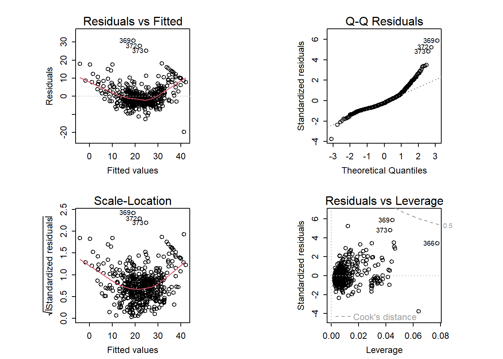
Los gráficos Residuals vs Fitted y Scale-Location indican heterocedasticidad y no linealidad.
En el gráfico Q-Q Residuals, se observa una clara desviación de la normalidad (marcada por la línea de puntos). Veamos el histograma:
hist(residuals(rlm.BostonModif))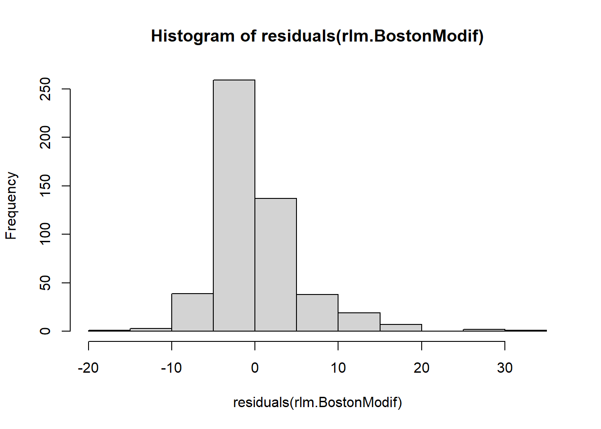
El histograma refleja asimetría por lo que rechazamos la normalidad.
- Por último, en los 4 gráficos de residuos quedan señaladas las observaciones 369 y 373, junto con la 372 que aparece en 3 de los gráficos. Ahora bien, no tienen una distancia de Cook elevada para considerarlas influyentes. De nuevo, parece claro que los problemas comentados (heterocedasticidad, falta de normalidad…) no provienen sólo de esas observaciones.
1.5.3 Extensiones/transformaciones de la regresión múltiple
El modelo lineal de regresión múltiple permite considerar “constructos” de variables, es decir, considerar productos de dos variables, términos no lineales de variables, etc. El tratamiento de esos casos con R es similar a lo visto hasta ahora, con el inconveniente de enfrentarse a su interpretación. Así, entre los “constructos” más habituales se encuentran:
Términos de interacción.
La sintaxislstat:agele indica aRque incluya un término de interacción entrelstatyage. La sintaxislstat * ageincluye como predictores simultáneamentelstat,agey la interacciónlstat:age, es una abreviatura delstat + age + lstat:age.summary(lm(medv ~ lstat * age, data = Boston))Call: lm(formula = medv ~ lstat * age, data = Boston) Residuals: Min 1Q Median 3Q Max -15.806 -4.045 -1.333 2.085 27.552 Coefficients: Estimate Std. Error t value Pr(>|t|) (Intercept) 36.0885359 1.4698355 24.553 < 2e-16 *** lstat -1.3921168 0.1674555 -8.313 8.78e-16 *** age -0.0007209 0.0198792 -0.036 0.9711 lstat:age 0.0041560 0.0018518 2.244 0.0252 * --- Signif. codes: 0 '***' 0.001 '**' 0.01 '*' 0.05 '.' 0.1 ' ' 1 Residual standard error: 6.149 on 502 degrees of freedom Multiple R-squared: 0.5557, Adjusted R-squared: 0.5531 F-statistic: 209.3 on 3 and 502 DF, p-value: < 2.2e-16Pregunta
¿Cómo se interpreta que la interacción salga significativa?Cuando una de las dos variables que interaccionan es dicotómica, la interacción se puede interpretar como un cambio en la pendiente según el grupo de pertenencia.
summary(lm(medv ~ lstat * chas, data = Boston))Call: lm(formula = medv ~ lstat * chas, data = Boston) Residuals: Min 1Q Median 3Q Max -14.657 -3.787 -1.289 1.644 24.953 Coefficients: Estimate Std. Error t value Pr(>|t|) (Intercept) 43.5923 2.0244 21.533 < 2e-16 *** lstat -1.3479 0.1554 -8.676 < 2e-16 *** chas0 -9.8251 2.1032 -4.672 3.84e-06 *** lstat:chas0 0.4329 0.1602 2.703 0.00711 ** --- Signif. codes: 0 '***' 0.001 '**' 0.01 '*' 0.05 '.' 0.1 ' ' 1 Residual standard error: 6.057 on 502 degrees of freedom Multiple R-squared: 0.5688, Adjusted R-squared: 0.5663 F-statistic: 220.8 on 3 and 502 DF, p-value: < 2.2e-16Quizá una imagen ayude:
ggplot(Boston, aes(x = lstat, y = medv, color = factor(chas))) + geom_point() + geom_smooth(method = "lm", se = FALSE) + scale_color_manual(values = c("0" = "steelblue", "1" = "firebrick"), labels = c("No", "Sí"), name = "Charles River") + labs(title = "Relación entre MEDV y LSTAT, diferenciada por CHAS", x = "Porcentaje de población con bajo estatus (LSTAT)", y = "Valor mediano de la vivienda (MEDV)") + theme_minimal(base_size = 14)`geom_smooth()` using formula = 'y ~ x'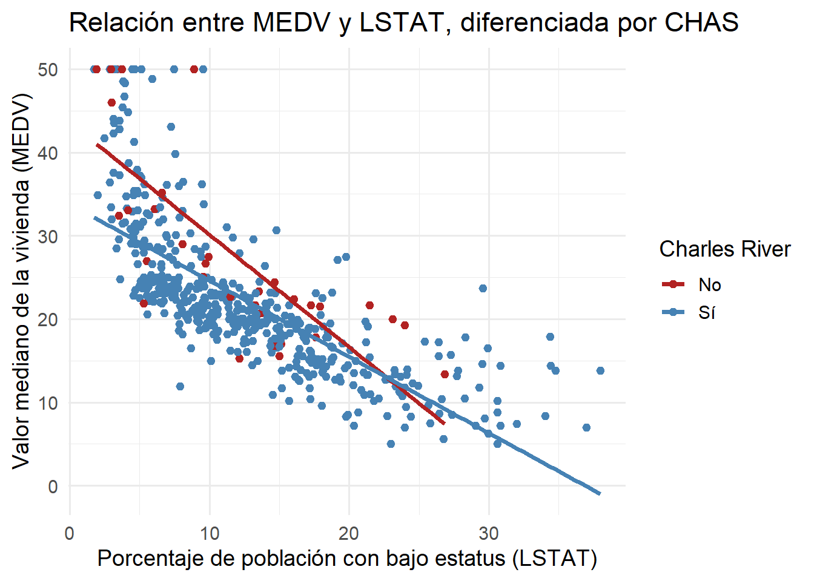
Transformaciones polinómicas de los predictores.
La sintaxisI(lstat^2)introduce en el modelo el predictor cuadrático delstat.rlm.Boston2 <- lm(medv ~ lstat + I(lstat^2), data = Boston) summary(rlm.Boston2)Call: lm(formula = medv ~ lstat + I(lstat^2), data = Boston) Residuals: Min 1Q Median 3Q Max -15.2834 -3.8313 -0.5295 2.3095 25.4148 Coefficients: Estimate Std. Error t value Pr(>|t|) (Intercept) 42.862007 0.872084 49.15 <2e-16 *** lstat -2.332821 0.123803 -18.84 <2e-16 *** I(lstat^2) 0.043547 0.003745 11.63 <2e-16 *** --- Signif. codes: 0 '***' 0.001 '**' 0.01 '*' 0.05 '.' 0.1 ' ' 1 Residual standard error: 5.524 on 503 degrees of freedom Multiple R-squared: 0.6407, Adjusted R-squared: 0.6393 F-statistic: 448.5 on 2 and 503 DF, p-value: < 2.2e-16El p-valor cercano a cero asociado con el término cuadrático sugiere que, su inclusión, conduce a un modelo mejorado. Pero, obviamente, introduce un problema claro de multicolinealidad, y por ello de interpretación de los parámetros, que se puede relativizar si el interés en el modelo es por su valor predictivo en lugar de explicativo (aunque conviene evaluar su estabilidad y rendimiento).
Pregunta
La funciónI()es necesaria para el objetivo que se persigue. ¿Qué consecuencias acarrea no aplicar la funciónI()en la especificación del modelo?Obviamente se pueden incluir términos cúbicos, etc.:
I(variable^3)…, varios a la vez, etc. Pero para una estimación polinómica, conviene acudir a la funciónpoly()(por defecto, ortogonaliza los predictores, reduciendo así la multicolinealidad, por lo que no produce directamente los coeficientes del polinomio habitual, sino el de la base ortogonal).rlm.Boston6 <- lm(medv ~ poly(lstat, 6), data = Boston) summary(rlm.Boston6)Call: lm(formula = medv ~ poly(lstat, 6), data = Boston) Residuals: Min 1Q Median 3Q Max -14.7317 -3.1571 -0.6941 2.0756 26.8994 Coefficients: Estimate Std. Error t value Pr(>|t|) (Intercept) 22.5328 0.2317 97.252 < 2e-16 *** poly(lstat, 6)1 -152.4595 5.2119 -29.252 < 2e-16 *** poly(lstat, 6)2 64.2272 5.2119 12.323 < 2e-16 *** poly(lstat, 6)3 -27.0511 5.2119 -5.190 3.06e-07 *** poly(lstat, 6)4 25.4517 5.2119 4.883 1.41e-06 *** poly(lstat, 6)5 -19.2524 5.2119 -3.694 0.000245 *** poly(lstat, 6)6 6.5088 5.2119 1.249 0.212313 --- Signif. codes: 0 '***' 0.001 '**' 0.01 '*' 0.05 '.' 0.1 ' ' 1 Residual standard error: 5.212 on 499 degrees of freedom Multiple R-squared: 0.6827, Adjusted R-squared: 0.6789 F-statistic: 178.9 on 6 and 499 DF, p-value: < 2.2e-16La interpretación de esta salida sugiere que el modelo polinómico de orden 5 conduce al mejor ajuste del modelo con un polinomio de la variable
lstat.Transformaciones logarítmicas.
También se pueden aplicar otro tipo de transformaciones sobre los predictores, siempre que sean apropiadas y oportunas.summary(lm(medv ~ log(rm), data = Boston))Call: lm(formula = medv ~ log(rm), data = Boston) Residuals: Min 1Q Median 3Q Max -19.487 -2.875 -0.104 2.837 39.816 Coefficients: Estimate Std. Error t value Pr(>|t|) (Intercept) -76.488 5.028 -15.21 <2e-16 *** log(rm) 54.055 2.739 19.73 <2e-16 *** --- Signif. codes: 0 '***' 0.001 '**' 0.01 '*' 0.05 '.' 0.1 ' ' 1 Residual standard error: 6.915 on 504 degrees of freedom Multiple R-squared: 0.4358, Adjusted R-squared: 0.4347 F-statistic: 389.3 on 1 and 504 DF, p-value: < 2.2e-16
1.5.4 Comparación de modelos mediante anova()
Con la función anova() se pueden comparar modelos “jerárquicos” o “anidados”. En los casos expuestos anteriormente, se puede cuantificar hasta qué punto el modelo cuadrático es superior al modelo simple, o que el modelo de orden 6 no es superior al de orden 5.
rlm.Boston1 <- lm(medv ~ lstat, data = Boston)
anova(rlm.Boston1, rlm.Boston2)Analysis of Variance Table
Model 1: medv ~ lstat
Model 2: medv ~ lstat + I(lstat^2)
Res.Df RSS Df Sum of Sq F Pr(>F)
1 504 19472
2 503 15347 1 4125.1 135.2 < 2.2e-16 ***
---
Signif. codes: 0 '***' 0.001 '**' 0.01 '*' 0.05 '.' 0.1 ' ' 1rlm.Boston5 <- lm(medv ~ poly(lstat, 5), data = Boston)
anova(rlm.Boston5, rlm.Boston6)Analysis of Variance Table
Model 1: medv ~ poly(lstat, 5)
Model 2: medv ~ poly(lstat, 6)
Res.Df RSS Df Sum of Sq F Pr(>F)
1 500 13597
2 499 13555 1 42.364 1.5596 0.2123En la primera tabla ANOVA se puede ver, en la etiquetada como línea 2, el estadístico F, que compara la reducción de RSS por los términos añadidos en el Model 2, por grado de libertad (en este caso sólo se añade un término y por tanto hay 1 gl), con el error residual del Model 1. Su elevado valor, por encima de 100, junto con un p-valor nulo en la práctica, llevan a considerar el modelo cuadrático muy superior al simple. Al lector observador no le debe sorprender este resultado a la vista del diagrama de dispersión entre medv y lstat, que presenta una clara no linealidad.
Por su parte, la segunda tabla ANOVA muestra un resultado bien distinto, un discreto valor del estadístico F, inferior a 2, que conduce a rechazar que el polinomio de orden 6 explique mejor la variable respuesta que el de orden 5. Además se puede comprobar que este p-valor coincide con el p-valor asociado al término de orden 6 estimado por la regresión mediante poly().
Tarea
¿Qué conclusiones obtiene al comparar los modelosrlm.Bostonyrlm.BostonModif?
1.5.5 Multicolinealidad: vif()
El cálculo del factor de inflación de la varianza (VIF) que ayuda a detectar la multicolinealidad (véase Sección 1.3.5 -Multicolinealidad-) de cada variable se puede obtener con la función vif(), del paquete car:
car::vif(rlm.Boston) lstat rm age tax chas
2.710812 1.678750 1.795414 1.533240 1.030405 Para estos datos, la mayoría de los VIF son bajos o moderados.
Regla de decisión práctica: no es preocupante la multicolinealidad si
vif < 5, o inclusovif < 10(son referencias heurísticas frecuentes, no umbrales universales).
Pregunta
¿Cómo salen los VIF de la regresión múltiple con los datosairquality?
Veamos un ejemplo claro de colinealidad (como sólo hay 2 variables involucradas):
car::vif(rlm.Boston2) lstat I(lstat^2)
12.93657 12.93657 Pregunta
¿Qué interpretación tiene que los VIF sean iguales?
Vamos a generar un caso artificial con alta multicolinealidad:
set.seed(pi)
Boston$sum <- Boston$lstat + Boston$rm*4 + rnorm(length(Boston$lstat))
rlm.BostonColine <- lm(medv ~ lstat + rm + tax + chas + sum,
data = Boston)
car::vif(rlm.BostonColine) lstat rm tax chas sum
48.475548 8.700491 1.430875 1.008564 32.619453 Pregunta
¿Qué interpretación tienen ahora los VIF?
Nota técnica: si el modelo contiene un factor con más de 1 gl, la función
vif()calcula los factores de inflación de la varianza generalizados. En tal caso, la “regla de decisión” es tener un GVIF^(1/2…) inferior a 2.5 (si se eleva al cuadrado proporciona un valor entre el 5 y el 10 que se mencionaban como umbrales para VIF).
1.6 Resumen
Este capítulo se dedica a los modelos lineales de regresión que permiten explicar una variable cuantitativa (respuesta) en función de una o más variables explicativas. Se estudia tanto el caso más sencillo, la regresión simple (una sola variable explicativa), como su generalización, la regresión múltiple (varias variables explicativas). El capítulo se completa con dos casos prácticos de modelización, utilizando R y los conjuntos de datos airquality y Boston.
Los modelos de regresión se basan en una estructura algebraica, lineal en los parámetros, más un término de error aleatorio que recoge la variabilidad no explicada por la estructura.
Para estimar los parámetros del modelo se utilizan estimadores de mínimos cuadrados, que buscan minimizar la suma de los cuadrados de los residuos y que, bajo normalidad, coinciden con los estimadores de máxima verosimilitud. En este material se proporcionan las fórmulas y el procedimiento para su obtención.
El modelo se sustenta en unos supuestos que se deben verificar. El análisis de residuos es clave para validar (o no) tales supuestos. Se utilizan gráficos como el de residuos frente a valores estimados para linealidad y homocedasticidad, y el Q-Q plot para normalidad. También se aplican contrastes como Shapiro-Wilk, Breusch–Pagan y Durbin-Watson. Algunas observaciones pueden tener gran impacto en el modelo. Mediante la medición de su leverage y su distancia de Cook se evalúa cuánto cambia el modelo al eliminar tal observación.
Gracias al conocimiento de las distribuciones en el muestreo de los estimadores, se pueden realizar contrastes de hipótesis y construir intervalos de confianza, que permiten interpretar el modelo.
La bondad de los modelos se evalúa con el coeficiente de determinación \(R^2\), que mide la proporción de variabilidad explicada por el modelo. En regresión simple, coincide con el cuadrado del coeficiente de correlación. En regresión múltiple, los posibles distintos modelos se comparan en la práctica mediante el \(R^2\) corregido que penaliza los modelos por el número de variables.
Cuando los supuestos no se cumplen, pueden aplicarse transformaciones a las variables. La familia Box-Cox ofrece opciones como logaritmo, raíz cuadrada o inversa. Estas transformaciones pueden mejorar la linealidad o la homocedasticidad, aunque afectan la interpretación de los parámetros.
Al plantear regresiones lineales múltiples, se introducen retos como la selección de variables, la multicolinealidad y la interpretabilidad. Se usan medidas como el VIF para detectar la multicolinealidad o redundancia entre variables y técnicas como ANOVA para comparar modelos.
En los casos prácticos se muestra cómo definir modelos con lm(), interpretar los resultados obtenidos con summary(), obtener intervalos de confianza con confint() y realizar predicciones con predict(). También se exploran gráficos de diagnóstico y medidas de influencia.
Bibliografía
Casero-Alonso, Víctor, y María Durbán. 2024. «Modelización lineal». Chap. 15 en Fundamentos de Ciencia de Datos con R. McGraw Hill. https://cdr-book.github.io/cap-lm.html.
Faraway, Julian J. 2004. Linear Models with R. Chapman & Hall/CRC.
Fernández-Avilés, Gema, y José-María Montero. 2024. Fundamentos de Ciencia de Datos con R. McGraw Hill. https://cdr-book.github.io/index.html.
James, Gareth, Daniela Witten, Trevor Hastie, y Robert Tibshirani. 2013. An introduction to statistical learning: with applications in R. 2nd ed. Vol. 103. Springer. https://www.statlearning.com/.
Peña, Daniel. 2002. Regresión y diseño de experimentos. Alianza Editorial.